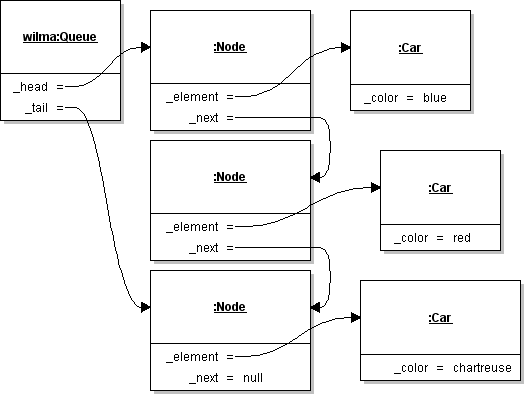
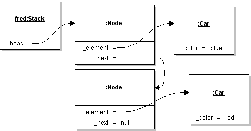

Canterbury QuestionBank
| Field | Value |
|---|---|
| ID | 634431 [created: 2013-06-18 09:46:22, author: kate (xkate), avg difficulty: 0.0000] |
| Question |
Suppose you are trying to choose between an array and a singly linked list to store the data in your program. Which data structure must be traversed one element at a time to reach a particular point? |
| A | an array |
| *B* | a linked list |
| C | both |
| D | neither |
| Explanation | In a basic linked list, each element is connected to the one after it. To reach a given element, you must start with the first node, if it's not the one you want, follow the link to the next one, and so forth until you reach the end of the list. (These are called "singly linked lists"; it is also possible to construct a doubly linked list, where each node is connected to the previous *and* the next element.) |
| Tags | ATT-Transition-ApplyCSspeak, Contributor_Kate_Sanders, Skill-PureKnowledgeRecall, Difficulty-1-Low, Block-Horizontal-1-Struct_Text, ExternalDomainReferences-1-Low, TopicSimon-Arrays, Block-Vertical-1-Atom, TopicWG-LinkedLists, Bloom-1-Knowledge, Language-none-none-none, LinguisticComplexity-1-Low, CS2, CodeLength-lines-00-to-06_Low, Nested-Block-Depth-0-no_ifs_loops |
| Field | Value |
|---|---|
| ID | 634945 [created: 2013-06-29 21:41:50, author: patitsas (xelizabeth), avg difficulty: 0.6667] |
| Question |
Richard has the following struct:
int val;
struct node *next;
};
Which of the following will NOT set ptr’s associated val to 6? |
| *A* | (***ptr).val = 6 |
| B | (**ptr).val = 6 |
| C | (*ptr)->val = 6 |
| Explanation | ***ptr is not useful here |
| Tags | Contributor_Elizabeth_Patitsas, ATT-Transition-CSspeak_to_Code, Skill-WriteCode_MeansChooseOption, ATT-Type-How, Difficulty-2-Medium, Block-Horizontal-1-Struct_Text, ExternalDomainReferences-1-Low, TopicSimon-Assignment, Block-Vertical-1-Atom, Language-C, TopicSimon-DataTypesAndVariables, Bloom-1-Knowledge, CS2, LinguisticComplexity-2-Medium, TopicWG-Pointers-ButNotReferences, TopicWG-Recs-Structs-HeteroAggs, CodeLength-lines-00-to-06_Low, ConceptualComplexity-2-Medium, Nested-Block-Depth-0-no_ifs_loops |
| Field | Value |
|---|---|
| ID | 627766 [created: 2013-06-07 09:15:48, author: kate (xkate), avg difficulty: 1.0000] |
| Question |
Consider the following recursive method: public int examMethod(int n) {
if (n == 1) return 1;
else return (n + this.examMethod(n-1));
}
What value is returned by the call |
| A | 1 |
| B | 16 |
| *C* | 136 |
| D | None of the above. |
| Explanation | This method returns the sum of the numbers from 1 to the parameter n (as long as n is greater than or equal to 1). |
| Tags | Nested-Block-Depth-1, ATT-Transition-ApplyCode, Contributor_Kate_Sanders, Skill-Trace_IncludesExpressions, ATT-Type-How, Difficulty-2-Medium, Block-Horizontal-2-Struct_Control, ExternalDomainReferences-1-Low, Block-Vertical-2-Block, Bloom-2-Comprehension, Language-Java, LinguisticComplexity-1-Low, CS2, CodeLength-lines-00-to-06_Low, TopicSimon-Recursion, ConceptualComplexity-2-Medium |
| Field | Value |
|---|---|
| ID | 632575 [created: 2013-06-19 14:26:05, author: kate (xkate), avg difficulty: 0.0000] |
| Question | Suppose you place m items in a hash table with an array size of s. What is the correct formula for the load factor? |
| A | s + m |
| B | s − m |
| C | m − s |
| D | s/m |
| *E* | m/s |
| Explanation | The load factor is the number of elements in the array, divided by the size of the array. It gives you an idea of how full the hashtable is. |
| Tags | ATT-Transition-ApplyCSspeak, Contributor_Kate_Sanders, Skill-PureKnowledgeRecall, ATT-Type-How, Difficulty-1-Low, Block-Horizontal-1-Struct_Text, ExternalDomainReferences-1-Low, Block-Vertical-1-Atom, TopicWG-Hashing-HashTables, Bloom-1-Knowledge, Language-none-none-none, LinguisticComplexity-1-Low, CS2, CodeLength-NotApplicable, Nested-Block-Depth-0-no_ifs_loops |
| Field | Value |
|---|---|
| ID | 634916 [created: 2013-06-29 21:09:25, author: edwards@cs.vt.edu (xstephen), avg difficulty: 1.5000] |
| Question |
The Fibonacci sequence is 0, 1, 1, 2, 3, 5, 8, 13 ... Any term (value) of the sequence that follows the first two terms (0 and 1) is equal to the sum of the preceding two terms. Consider the following incomplete method to compute any term of the Fibonacci sequence: public static int fibonacci(int term)
{
int fib1 = 0; // Line 1
int fib2 = 1; // Line 2
int fibn = 0; // Line 3
if (term == 1) // Line 4
{
return fib1; // Line 5
}
if (term == 2) // Line 6
{
return fib2; // Line 7
}
for (__________) // Line 8: loop to the nth term
{
fibn = __________; // Line 9: compute the next term
fib1 = __________; // Line 10: reset the second preceding term
fib2 = __________; // Line 11: reset the immediate preceding term
}
return fibn; // Line 12: return the computed term
}
Choose the best answer to fill in the blank on line 8.
|
| A | int n = 0; n < term; n++ |
| *B* | int n = 1; n < term; n++ |
| C | int n = 2; n < term; n++ |
| D | int n = 3; n < term; n++ |
| E | int n = 4; n < term; n++ |
| Explanation | From the question, it is clear that the terms in the sequence are numbered starting at 1. The two base cases cover terms 1 and 2, and the loop must then repeat (term - 2) times in total. This will be achieved if the initial value on the loop counter is 1. |
| Tags | ATT-Transition-ApplyCode, Contributor_Stephen_Edwards, Skill-WriteCode_MeansChooseOption, ATT-Type-How, Difficulty-2-Medium, Block-Horizontal-1-Struct_Text, ExternalDomainReferences-1-Low, Block-Vertical-2-Block, Language-Java, Bloom-2-Comprehension, TopicSimon-LoopsSubsumesOperators, CS1, TopicSimon-MethodsFuncsProcs, CodeLength-lines-06-to-24_Medium, ConceptualComplexity-1-Low, Nested-Block-Depth-1 |
| Field | Value |
|---|---|
| ID | 633661 [created: 2013-06-22 10:31:58, author: jspacco (xjaime), avg difficulty: 0.6667] |
| Question | Which of these relationships best exemplify the "IS-A" relationships in object-oriented programming (OOP)? |
| A | Empire State Building IS-A Building |
| *B* | Cat IS-A Mammal |
| C |
Angry Cat IS-A Cat (Note that "Angry Cat" is a specific cat that has become an online internet meme) |
| D | All of the above |
| E | None of the above |
| Explanation |
A and C are wrong because the Empire State Building would be best be described as an instance of the category Cuilding, while Angry Cat is an instance of the category Cat. B is correct because Cat is a sub-category of Mammal, which best exemplifies the IS-A relations. In OOP, the IS-A relationship is used to denote relationships between classes, which are sort of like categories. |
| Tags | Contributor_Jaime_Spacco, ATT-Transition-English_to_CSspeak, ATT-Type-How, Difficulty-1-Low, SkillWG-AnalyzeCode, Block-Horizontal-2-Struct_Control, ExternalDomainReferences-2-Medium, Block-Vertical-3-Relations, Bloom-3-Analysis, Language-none-none-none, LinguisticComplexity-1-Low, CS2, TopicSimon-OOconcepts, CodeLength-NotApplicable, ConceptualComplexity-2-Medium, Nested-Block-Depth-0-no_ifs_loops |
| Field | Value |
|---|---|
| ID | 632850 [created: 2013-06-20 11:13:17, author: jspacco (xjaime), avg difficulty: 0.5000] |
| Question |
What does this print when x is assigned 1? if (x==1) {
System.out.println("x is 1");
} if (x==2) {
System.out.println("x is 2");
} else {
System.out.println("not 1 or 2");
}
|
| A | x is 1 |
| B | x is 2 |
| C |
x is 1 x is 2 |
| *D* |
x is 1 not 1 or 2 |
| E |
x is 2 not 1 or 2 |
| Explanation |
This code snipped does not have an else-if! It may as well be written like this: if (x==1) {
System.out.println("x is 1");
}
if (x==2) {
System.out.println("x is 2");
} else {
System.out.println("not 1 or 2");
}
So when x==1, clearly we get "x is 1" printed, bu since 1 does not equal 2, we also get "not 1 or 2" with the else. Be aware of when you are using an if, and when are are using an else-if, because they are quite different! |
| Tags | ATT-Transition-ApplyCode, Contributor_Jaime_Spacco, Skill-Trace_IncludesExpressions, ATT-Type-How, Difficulty-1-Low, Block-Horizontal-2-Struct_Control, ExternalDomainReferences-1-Low, Block-Vertical-2-Block, TopicSimon-DataTypesAndVariables, Language-Java, Bloom-3-Analysis, CS1, LinguisticComplexity-1-Low, CodeLength-lines-00-to-06_Low, ConceptualComplexity-1-Low, Nested-Block-Depth-1 |
| Field | Value |
|---|---|
| ID | 634127 [created: 2013-06-23 13:04:28, author: patitsas (xelizabeth), avg difficulty: 0.5000] |
| Question | In C, which of the following will return 1, if s1 = "hi" and s2 = "hi"? Circle all that apply. |
| A | s1 == s2 |
| *B* | strcmp(s1, s2) |
| C | strlen(s1) |
| D | s1 == "hi" |
| Explanation | C is not Python! Only strcmp will do what Python and similar languages would do. (My CS2 students come into C having learnt Python.) |
| Tags | Contributor_Elizabeth_Patitsas, ATT-Transition-CSspeak_to_Code, Skill-Trace_IncludesExpressions, ATT-Type-How, Difficulty-2-Medium, Block-Horizontal-1-Struct_Text, ExternalDomainReferences-1-Low, Block-Vertical-1-Atom, Language-C, TopicSimon-DataTypesAndVariables, Bloom-1-Knowledge, LinguisticComplexity-1-Low, CS2, CodeLength-lines-00-to-06_Low, TopicSimon-RelationalOperators, TopicSimon-Strings, Nested-Block-Depth-0-no_ifs_loops |
| Field | Value |
|---|---|
| ID | 633291 [created: 2013-06-18 07:47:41, author: crjjrc (xchris), avg difficulty: 0.0000] |
| Question | Inserting a node into a heap is |
| A | O(1) |
| *B* | O(log N) |
| C | O(N) |
| D | O(N log N) |
| E | O(N2) |
| Explanation | Inserting a node involves putting the new node into the bottom level of the heap and trickling up, possibly to the root level. Since heaps are balanced and the number of levels is log N, the performance is O(log N). |
| Tags | Contributor_Chris_Johnson, ATT-Transition-ApplyCSspeak, Skill-PureKnowledgeRecall, ATT-Type-How, Difficulty-1-Low, TopicSimon-AlgorithmComplex-BigO, Block-Horizontal-2-Struct_Control, ExternalDomainReferences-1-Low, Block-Vertical-2-Block, TopicWG-Heaps, Bloom-3-Analysis, Language-none-none-none, LinguisticComplexity-1-Low, CS2, CodeLength-NotApplicable, ConceptualComplexity-2-Medium, Nested-Block-Depth-0-no_ifs_loops |
| Field | Value |
|---|---|
| ID | 630996 [created: 2013-06-13 13:02:52, author: kate (xkate), avg difficulty: 0.0000] |
| Question |
Consider the following Java method: public void printMenu(){
System.out.println("Choose one of the following options:");
System.out.println("1) Display account balance");
System.out.println("2) Make deposit");
System.out.println("3) Make withdrawal");
System.out.println("4) Quit");
}
Select the best reason for making this a separate method with a name, instead of including the code in some other method: |
| *A* | Otherwise, you would have to write the same code more than once. |
| B | By breaking your program up into logical parts, you make it more readable. |
| C | By giving this block of code a name, you make your program more readable. |
| D | It's necessary to keep the calling method under 20 lines long. |
| Explanation | There are multiple correct answers to this question. A, B, and C are all reasonable answers. D is less good, because while it's a good idea to keep your methods relatively short, it won't always make sense to stick to an arbitrary limit like 20 lines. |
| Tags | ATT-Transition-CSspeak_to_Code, Contributor_Kate_Sanders, Skill-DesignProgramWithoutCoding, Difficulty-1-Low, ATT-Type-Why, Block-Horizontal-1-Struct_Text, ExternalDomainReferences-1-Low, Block-Vertical-3-Relations, Language-Java, Bloom-5-Synthesis, LinguisticComplexity-1-Low, CS1, TopicSimon-MethodsFuncsProcs, MultipleAnswers-See-Explanation, TopicSimon-ProgramDesign, CodeLength-lines-06-to-24_Medium, ConceptualComplexity-2-Medium, Nested-Block-Depth-0-no_ifs_loops |
| Field | Value |
|---|---|
| ID | 635037 [created: 2013-06-29 23:31:20, author: mikeyg (xmikey), avg difficulty: 1.0000] |
| Question | A given O(n2) algorithm takes five seconds to execute on a data set size of 100. Using the same computer and the same algorithm, how many seconds should this algorithm run for when executed on a data set of size 500? |
| A | 25 seconds |
| B | 100 seconds |
| C | 42 seconds |
| *D* | 125 seconds |
| E | None of the above. |
| Explanation | Quadratic algorithms represent an n2 increase in run time. Hence if the data set size increases by a factor of five, for a quadratic algorithm, the increase in run time becomes a factor of 25. Hence 25 times 5 (base run time) is 125. |
| Tags | ATT-Transition-ApplyCSspeak, Contributor_Michael_Goldweber, Skill-PureKnowledgeRecall, ATT-Type-How, Difficulty-1-Low, TopicSimon-AlgorithmComplex-BigO, Block-Horizontal-2-Struct_Control, ExternalDomainReferences-1-Low, Block-Vertical-4-Macro-Structure, Bloom-3-Analysis, Language-none-none-none, CS1, LinguisticComplexity-1-Low, CodeLength-NotApplicable, Nested-Block-Depth-0-no_ifs_loops |
| Field | Value |
|---|---|
| ID | 632280 [created: 2013-06-18 10:54:37, author: kate (xkate), avg difficulty: 0.0000] |
| Question | If the StackADT operation |
| *A* | O(1) |
| B | O(log2n) |
| C | O(n) |
| D | O(n2) |
| E | O(2n) |
| Explanation | The push method adds a new element to a stack. Regardless of the size of the list, the operations needed to add a new element include creating a node to store it in and setting the values of a few pointers, all of which can be done in constant time. |
| Tags | ATT-Transition-ApplyCSspeak, Contributor_Kate_Sanders, Skill-PureKnowledgeRecall, ATT-Type-How, Difficulty-1-Low, Block-Horizontal-1-Struct_Text, ExternalDomainReferences-1-Low, TopicSimon-Arrays, Block-Vertical-1-Atom, TopicWG-LinkedLists, Bloom-1-Knowledge, Language-none-none-none, LinguisticComplexity-1-Low, CS2, CodeLength-NotApplicable, ConceptualComplexity-1-Low, Nested-Block-Depth-0-no_ifs_loops |
| Field | Value |
|---|---|
| ID | 618622 [created: 2013-05-28 21:01:01, author: marzieh (xmarzieh), avg difficulty: 0.0000] |
| Question |
Which line of the following code has a compilation error? import java.util.*; public class bicycles { public static void main(String[] Main) { Vector<bike> q = new Vector(); bike b = new bike(); q.add(b); } } class bike{ private int bikePrice; private bike(){ bikePrice = 0; } private bike(int p){ bikePrice = p; } } |
| A | public static void main(String[] Main) |
| B | Vector<bike> q = new Vector(); |
| *C* | bike b = new bike(); |
| D | private int bikePrice; |
| Field | Value |
|---|---|
| ID | 632844 [created: 2013-06-20 10:58:54, author: jspacco (xjaime), avg difficulty: 0.0000] |
| Question | After the assignments |
| *A* | True |
| B | False |
| C | 1 |
| D | 0 |
| E | an error |
| Explanation |
the not operator has a higher precedence than or, so this expression should be read: ((not a) or b) and (a or (not b)) Which is True when a=True and b=False |
| Tags | ATT-Transition-ApplyCode, Contributor_Jaime_Spacco, Skill-Trace_IncludesExpressions, ATT-Type-How, Difficulty-1-Low, Block-Horizontal-2-Struct_Control, ExternalDomainReferences-1-Low, Block-Vertical-1-Atom, TopicSimon-DataTypesAndVariables, Bloom-2-Comprehension, Language-Python, TopicSimon-LogicalOperators, CS1, LinguisticComplexity-1-Low, CodeLength-lines-00-to-06_Low, ConceptualComplexity-1-Low, Nested-Block-Depth-0-no_ifs_loops |
| Field | Value |
|---|---|
| ID | 633457 [created: 2013-06-21 17:24:32, author: jspacco (xjaime), avg difficulty: 0.0000] |
| Question |
Consider the following code: number = int(input("Enter a positive number: "))
while number > 1:
if (number % 2 == 1):
number = number * 3 + 1
else:
number = number/2
print number
if number == 1:
break
else:
print "The end"
What output is produced when the input is '-1'? |
| A | an error |
| *B* | The end |
| C | no output is produced |
| D | -1 |
| E | none of the above |
| Explanation | if number is not greater than 1, we immediately get to "The end". In Python, while loops are allowed to have an else statement. |
| Tags | Nested-Block-Depth-2-two-nested, ATT-Transition-ApplyCode, Contributor_Jaime_Spacco, Skill-Trace_IncludesExpressions, ATT-Type-How, Difficulty-1-Low, Block-Horizontal-2-Struct_Control, ExternalDomainReferences-1-Low, TopicSimon-ArithmeticOperators, Block-Vertical-2-Block, TopicSimon-DataTypesAndVariables, Bloom-3-Analysis, Language-Python, CS1, LinguisticComplexity-1-Low, CodeLength-lines-06-to-24_Medium, ConceptualComplexity-1-Low |
| Field | Value |
|---|---|
| ID | 627736 [created: 2013-06-07 07:42:13, author: kate (xkate), avg difficulty: 1.0000] |
| Question |
3. Consider the following class definition. import java.util.Scanner;
public class SillyClass2 {
private int num, totalRed, totalBlack;
public SillyClass2 () {
num = 0;
totalRed = 0;
totalBlack = 0;
this.spinWheel();
System.out.print("Black: " + totalBlack);
System.out.println(" and red: " + totalRed);
}
public void spinWheel () {
Scanner kbd = new Scanner(System.in);
System.out.println("Enter 1 or 0, -1 to quit.");
num = kbd.nextInt();
while (num >= 0) {
if (num == 0)
totalRed++;
else if (num == 1)
totalBlack++;
else System.out.println("Try again");
System.out.println("Enter 1 or 0, -1 to quit).");
num = kbd.nextInt();
}
System.out.println("Thanks for playing.");
}
}
Which of the following sequences of inputs causes every line of code to be executed at least once? |
| A | 0 0 10 -1 |
| B | 1 0 1 -1 |
| C | 1 1 10 -1 |
| *D* | 1 0 10 -1 |
| E | 1 0 10 0 |
| Explanation | This question tests understanding of a conditional nested inside a loop. Choice A is wrong, because the initial value must be >= 0 for the loop to be executed. Choice E is wrong, because the last value must be -1, or the code never exits the loop and the last line of code is not executed. Choices B and C are wrong, because inside the loop, we need one value that's 0, one value that's 1, and one value that's greater than 1, so that each branch of the conditional will be executed. |
| Tags | Nested-Block-Depth-2-two-nested, ATT-Transition-ApplyCode, Contributor_Kate_Sanders, Skill-TestProgram, ATT-Type-How, Difficulty-2-Medium, Block-Horizontal-2-Struct_Control, ExternalDomainReferences-1-Low, Block-Vertical-2-Block, Bloom-2-Comprehension, Language-Java, TopicSimon-LoopsSubsumesOperators, CS1, LinguisticComplexity-1-Low, CodeLength-lines-25-or-more_High, ConceptualComplexity-2-Medium, TopicSimon-SelectionSubsumesOps, TopicSimon-Testing |
| Field | Value |
|---|---|
| ID | 632308 [created: 2013-06-18 12:24:34, author: kate (xkate), avg difficulty: 1.0000] |
| Question |
Suppose public T peek() {
T tmp;
if (this.top == null) {
tmp = null;
} else {
tmp = this.top.getElement();
}
return tmp;
}
|
| *A* | O(1) |
| B | O(log n) |
| C | O(n) |
| D | O(n2) |
| E | O(2n) |
| Explanation | The method body is executed in a fixed amount of time, independent of the size of the stack. |
| Tags | Contributor_Kate_Sanders, ATT-Transition-Code_to_CSspeak, ATT-Type-How, SkillWG-AnalyzeCode, Difficulty-2-Medium, TopicWG-ADT-Stack-Implementations, Block-Horizontal-1-Struct_Text, TopicSimon-AlgorithmComplex-BigO, ExternalDomainReferences-1-Low, Block-Vertical-2-Block, Language-Java, Bloom-3-Analysis, LinguisticComplexity-1-Low, CS2, CodeLength-lines-06-to-24_Medium, ConceptualComplexity-2-Medium, Nested-Block-Depth-1 |
| Field | Value |
|---|---|
| ID | 633569 [created: 2013-06-19 14:41:21, author: crjjrc (xchris), avg difficulty: 2.0000] |
| Question | You need to store a large amount of data, but you don't know the exact number of elements. The elements must be searched quickly by some key. You want to waste no storage space. The elements to be added are in sorted order. What is the simplest data structure that meets your needs? |
| A | Ordered array |
| B | Linked list |
| C | Hashtable |
| D | Binary search tree |
| *E* | Self-balancing tree |
| Explanation | Hashtables provide fast searching, but they may waste storage space. A tree makes better use of memory. Since the keys are in a sorted order, it's likely a binary tree will end up looking like a linked list instead of a well-balanced tree. With a self-balancing tree, we can make sure searching goes faster. |
| Tags | Contributor_Chris_Johnson, ATT-Transition-ApplyCSspeak, Skill-PureKnowledgeRecall, ATT-Type-How, Difficulty-1-Low, Block-Horizontal-2-Struct_Control, ExternalDomainReferences-1-Low, TopicWG-ChoosingAppropriateDS, TopicSimon-CollectionsExceptArray, Block-Vertical-4-Macro-Structure, Bloom-1-Knowledge, Language-none-none-none, LinguisticComplexity-1-Low, CS2, CodeLength-NotApplicable, ConceptualComplexity-2-Medium, Nested-Block-Depth-0-no_ifs_loops |
| Field | Value |
|---|---|
| ID | 633225 [created: 2013-06-12 07:09:07, author: crjjrc (xchris), avg difficulty: 0.0000] |
| Question | Which one of the following is a limitation of Java's arrays? |
| A | They can only hold primitive types. |
| B | They can only hold reference types. |
| C | Once an element is assigned, that element cannot be modified. |
| D | Their length must be stored separately. |
| *E* | They cannot change size. |
| Explanation | Arrays hold primitives and references, have a builtin length property, and allow modification of individual elements. They cannot be resized. |
| Tags | Contributor_Chris_Johnson, ATT-Transition-ApplyCSspeak, Skill-PureKnowledgeRecall, ATT-Type-How, Difficulty-1-Low, Block-Horizontal-2-Struct_Control, ExternalDomainReferences-1-Low, TopicSimon-Arrays, TopicWG-ChoosingAppropriateDS, Block-Vertical-1-Atom, Bloom-1-Knowledge, Language-Java, CS1, LinguisticComplexity-1-Low, CodeLength-NotApplicable, Nested-Block-Depth-0-no_ifs_loops |
| Field | Value |
|---|---|
| ID | 618500 [created: 2013-05-28 19:52:56, author: marzieh (xmarzieh), avg difficulty: 0.0000] |
| Question |
What will be printed? String name = "John"; String surname = "Smith"; name.concat(surname); System.out.print(name + " "); System.out.println(surname); |
| *A* | John Smith |
| B | John Smith Smith |
| C | JohnSmith Smith |
| D | Smith John |
| Field | Value |
|---|---|
| ID | 618498 [created: 2013-05-28 19:51:31, author: marzieh (xmarzieh), avg difficulty: 0.0000] |
| Question |
What should be done to change the following code to a correct one? public class exam { float mark; public static void main(String[]arg){ float aCopyofMark; exam e = new exam(); System.out.println( e.mark + aCopyofMark); } } |
| A | Change float mark; to static float mark; |
| B | Delete exam e = new exam(); |
| *C* | Initialize aCopyofMark |
| D | This is a correct code. |
| Field | Value |
|---|---|
| ID | 633646 [created: 2013-06-22 09:38:24, author: jspacco (xjaime), avg difficulty: 1.0000] |
| Question |
Consider the following two simple Java classes: public class Base {
protected int x;
}
public class Derived extends Base {
protected int y;
}
Which of the following is/are legal? |
| A |
Base b=new Base(); Derived d=b; |
| *B* |
Derived d=new Derived(); Base b=d; |
| C | Base b=new Derived(); |
| D | Derived d=new Base(); |
| E | All of the above |
| Explanation |
B and C are OK. Remember your Liskov substitution principle: You can swap in a derived class anywhere that you expect a base class, because a derived class has at least as much information as a base class. The reverse, however, is not true! A derived class may add many more instance variables that the base class knows nothing about! |
| Tags | ATT-Transition-ApplyCode, Contributor_Jaime_Spacco, ATT-Type-How, Difficulty-1-Low, SkillWG-AnalyzeCode, Block-Horizontal-1-Struct_Text, ExternalDomainReferences-1-Low, Block-Vertical-4-Macro-Structure, Language-Java, Bloom-3-Analysis, LinguisticComplexity-1-Low, CS2, TopicSimon-OOconcepts, MultipleAnswers-See-Explanation, CodeLength-lines-06-to-24_Medium, ConceptualComplexity-1-Low, Nested-Block-Depth-0-no_ifs_loops |
| Field | Value |
|---|---|
| ID | 632761 [created: 2013-06-19 20:58:09, author: ray (ray), avg difficulty: 1.0000] |
| Question |
This question refers to a method "swap", for which part of the code is shown below:
// swaps elements "i" and "j" of array "x".
xxx missing code goes here xxx
The missing code from "swap" is: |
| *A* | temp = x[i];
x[i] = x[j];
x[j] = temp;
|
| B | temp = x[i];
x[j] = x[i];
x[j] = temp;
|
| C | temp = x[j];
x[j] = x[i];
x[j] = temp;
|
| D | temp = x[j];
x[i] = x[j];
x[j] = temp;
|
| E | temp = x[i];
x[j] = x[i];
x[i] = temp;
|
| Explanation |
Suppose initially x[i]=A, x[j]=B. After swap, we want x[i]=B, and x[j]=A, in both cases it doesn’t matter what temp equals, so long as x[i] and x[j] values have been swapped after completion. a) temp = x[i] = A x[i] = x[j] = B x[j] = temp = A Before: x[i] = A, x[j] = B After: x[i] = B, x[j] = A Both have been swapped, .’. CORRECT b) temp = x[i] = A x[j] = x[i] = A x[j] = temp = A Before: x[i] = A, x[j] = B After: x[i] = A, x[j] = A Only x[j] has been swapped, .’. INCORRECT c) temp = x[j] = B x[j] = x[i] = A x[j] = temp = B Before: x[i] = A, x[j] = B After: x[i] = A, x[j] = B Neither have been swapped, .’. INCORRECT d) temp = x[j] = B x[i] = x[j] = B x[j] = temp = B Before x[i] = A, x[j] = B After: x[i] = B, x[j] = B Onlu x[i] has been swapped, .’. INCORRECT e) temp = x[i] = A x[j] = x[i] = A x[i] = temp = A Before: x[i] = A, x[j] = B After: x[i] = A, x[j] = A
Only x[j] has been swapped, .’. INCORRECT |
| Tags | Contributor_Raymond_Lister, ATT-Transition-English_to_Code, Skill-WriteCode_MeansChooseOption, ATT-Type-How, Difficulty-1-Low, Block-Horizontal-2-Struct_Control, ExternalDomainReferences-1-Low, TopicSimon-Arrays, TopicSimon-Assignment, Block-Vertical-2-Block, Language-Java, Bloom-4-Application, CS1, LinguisticComplexity-1-Low, TopicSimon-MethodsFuncsProcs, CodeLength-lines-06-to-24_Medium, Neo-Piaget-2-Preoperational, ConceptualComplexity-2-Medium, Nested-Block-Depth-0-no_ifs_loops |
| Field | Value |
|---|---|
| ID | 618483 [created: 2013-05-28 19:41:09, author: marzieh (xmarzieh), avg difficulty: 2.0000] |
| Question |
Class B extends class A in which a method called firstMethod existed. The signature of firstMethod is as follow. In class B we are going to override firstMethod. Which declaration of this method in class B is correct? protected void firstMethod(int firstVar) |
| A | private void firstMethod(int firstVar) |
| B | default void firstMethod(int firstVar) |
| *C* | public void firstMethod(int firstVar) |
| D | void firstMethod(int firstVar) |
| Field | Value |
|---|---|
| ID | 633579 [created: 2013-06-19 15:03:38, author: crjjrc (xchris), avg difficulty: 2.0000] |
| Question |
You've got a class that holds two ints and that can be compared with other IntPair objects: class IntPair {
private int a;
private int b;
public IntPair(int a, int b) {
this.a = a;
this.b = b;
}
public int compareTo(IntPair other) {
if (a < other.a) {
return -1;
} else if (a > other.a) {
return 1;
} else {
if (b == other.b) {
return 0;
} else if (b > other.b) {
return -1;
} else {
return 1;
}
}
}
}
Let's denote new IntPair(5, 7) as [5 7]. You've got a list of IntPairs: [5 7], [2 9], [3 2] You sort them using IntPair.compareTo. What is their sorted order? |
| *A* | [2 9], [3 2], [5 7] |
| B | [5 7], [3 2], [2 9] |
| C | [3 2], [5 7], [2 9] |
| D | [2 9], [5 7], [3 2] |
| Explanation | compareTo orders on IntPair.a first, in ascending fashion. Since all elements have unique a values, we simple sort according to the first element. |
| Tags | Contributor_Chris_Johnson, Nested-Block-Depth-2-two-nested, ATT-Transition-Code_to_CSspeak, Skill-Trace_IncludesExpressions, ATT-Type-How, Difficulty-1-Low, Block-Horizontal-2-Struct_Control, ExternalDomainReferences-1-Low, Block-Vertical-2-Block, Language-Java, Bloom-2-Comprehension, LinguisticComplexity-1-Low, CS2, TopicSimon-OOconcepts, CodeLength-NotApplicable, TopicWG-Searching, TopicSimon-RelationalOperators, TopicWG-Sorting-Other, ConceptualComplexity-2-Medium |
| Field | Value |
|---|---|
| ID | 633598 [created: 2013-06-22 02:38:41, author: jspacco (xjaime), avg difficulty: 0.0000] |
| Question |
What does the following Java code print? int inner=0;
int outer=0;
for (int i=0; i<6; i++) {
outer++;
for (int j=0; j<=3; j++) {
inner++;
}
}
System.out.println("outer "+outer+", inner"+inner);
|
| A | outer 6, inner 3 |
| B | outer 7, inner 4 |
| C | outer 6, inner 18 |
| D | outer 7, inner 24 |
| *E* | outer 6, inner 24 |
| Explanation | For nested loops, the inner loop runs to completion one time for each iteration of the outer loop. So if the outer loop executes 6 times, that means the inner loop, which normally executes its loop body 4 times, will actually run the loop body 24 times (4 executes times 6 outer executions). I probably could explain that better. |
| Tags | Nested-Block-Depth-2-two-nested, ATT-Transition-ApplyCode, Contributor_Jaime_Spacco, Skill-Trace_IncludesExpressions, ATT-Type-How, Difficulty-1-Low, Block-Horizontal-2-Struct_Control, ExternalDomainReferences-1-Low, Block-Vertical-2-Block, Language-Java, Bloom-3-Analysis, TopicSimon-LoopsSubsumesOperators, CS1, LinguisticComplexity-1-Low, CodeLength-lines-06-to-24_Medium |
| Field | Value |
|---|---|
| ID | 632790 [created: 2013-06-20 08:14:12, author: jspacco (xjaime), avg difficulty: 0.0000] |
| Question | After the assignments |
| *A* | 2 |
| B | 2.25 |
| C | 3 |
| D | 3.0 |
| E | None of the above |
| Explanation |
This is an integer division question. Python will return 2, since 27/12 is 2, with a remainder. But integer division only cares about the quotient, not the remainder. Note that you may get a different answer using Python3 rather than with Python2.x |
| Tags | ATT-Transition-ApplyCode, Contributor_Jaime_Spacco, Skill-Trace_IncludesExpressions, ATT-Type-How, Difficulty-1-Low, Block-Horizontal-1-Struct_Text, ExternalDomainReferences-1-Low, TopicSimon-ArithmeticOperators, Block-Vertical-1-Atom, Bloom-2-Comprehension, Language-Python, TopicWG-Numeric-Int-Truncation, CS1, LinguisticComplexity-1-Low, CodeLength-lines-00-to-06_Low, ConceptualComplexity-1-Low, Nested-Block-Depth-0-no_ifs_loops |
| Field | Value |
|---|---|
| ID | 632599 [created: 2013-06-19 15:27:00, author: kate (xkate), avg difficulty: 0.0000] |
| Question | Which of the following is not an ADT? |
| A | List |
| B | Queue |
| *C* | Hashtable |
| D | Stack |
| Explanation |
Hashtable is a data structure, not an abstract datatype. Note: this question is based on a question by Andrew Luxton-Reilly. |
| Tags | ATT-Transition-ApplyCSspeak, Contributor_Kate_Sanders, Skill-PureKnowledgeRecall, ATT-Type-How, Difficulty-1-Low, Block-Horizontal-1-Struct_Text, ExternalDomainReferences-1-Low, Block-Vertical-1-Atom, TopicWG-Hashing-HashTables, Bloom-1-Knowledge, Language-none-none-none, LinguisticComplexity-1-Low, CS2, CodeLength-NotApplicable, ConceptualComplexity-2-Medium, Nested-Block-Depth-0-no_ifs_loops |
| Field | Value |
|---|---|
| ID | 618516 [created: 2013-05-28 20:00:53, author: marzieh (xmarzieh), avg difficulty: 0.0000] |
| Question |
What kind of variable is label? public class Labeller extends JFrame { public Labeller () { JLabel label = new JLabel("Field or Variable"); } public static void main (String[] args) { new Labeller(); } } |
| A | local variable, primitive |
| B | Instance variable, primitive |
| *C* | local variable, Object Reference |
| D | Instance variable, Object Reference |
| Field | Value |
|---|---|
| ID | 618485 [created: 2013-05-28 19:42:33, author: marzieh (xmarzieh), avg difficulty: 0.0000] |
| Question |
A method called myMethod has been defined in a class with the following signature. Which of these four choices cannot be an overloaded alternative for myMethod? public void myMethod (int i, double d) |
| *A* | public int myMethod (int i, double d) |
| B | public void myMethod (double d) |
| C | public void myMethod (String i , double d) |
| D | public int myMethod (int i) |
| Field | Value |
|---|---|
| ID | 634921 [created: 2013-06-29 21:37:09, author: patitsas (xelizabeth), avg difficulty: 0.0000] |
| Question | In quicksort, what does partitioning refer to? |
| A | How the list/array always has three partitions: the area before low, the area between |
| B | The process in which the memory allocated for the list/array that you are sorting is |
| C | The process in which the list/array is partitioned into two equal halves; the sort proceeds |
| *D* | The step where all elements less than a given pivot are placed on the left of the pivot, |
| Explanation | D is how it works. |
| Tags | ATT-Transition-ApplyCSspeak, Contributor_Elizabeth_Patitsas, ATT-Type-How, Difficulty-1-Low, ExternalDomainReferences-1-Low, Bloom-1-Knowledge, Language-none-none-none, CS2, LinguisticComplexity-2-Medium, CodeLength-NotApplicable, TopicWG-Sorting-NlogN, TopicWG-Sorting-Other, TopicWG-Sorting-Quadratic, ConceptualComplexity-2-Medium |
| Field | Value |
|---|---|
| ID | 632831 [created: 2013-06-11 07:07:09, author: crjjrc (xchris), avg difficulty: 1.0000] |
| Question |
Many languages allow negative indexing for arrays: items[-1] for the last item, items[-2] for the second to last, and so on. Java doesn't support this indexing directly, but we can create a class that wraps around an array and converts a negative index into the appropriate positive one: class WrappedStringArray {
private String[] items;
...
public String get(int i) {
if (i >= 0) {
return items[i];
} else {
return TODO;
}
}
}
What expression must we replace TODO with to support negative indexing? |
| A | (int) Math.abs(i) |
| *B* | items.length + i |
| C | (int) Math.abs(i + 1) |
| D | items.length - 1 - i |
| E | items.length - i |
| Explanation | We want items[-1] to map to items[items.length - 1], and only the correct answer handles this case. |
| Tags | Contributor_Chris_Johnson, ATT-Transition-ApplyCode, Skill-WriteCode_MeansChooseOption, ATT-Type-How, Difficulty-1-Low, Block-Horizontal-1-Struct_Text, ExternalDomainReferences-1-Low, TopicSimon-Arrays, Block-Vertical-2-Block, Language-Java, Bloom-2-Comprehension, CS1, LinguisticComplexity-1-Low, CodeLength-lines-06-to-24_Medium, ConceptualComplexity-1-Low, Nested-Block-Depth-1 |
| Field | Value |
|---|---|
| ID | 633558 [created: 2013-06-19 11:21:35, author: crjjrc (xchris), avg difficulty: 2.0000] |
| Question | What happens if you forget to define the |
| A | The elements can be inserted but remain inaccessible. |
| B | Inserting an element will raise an exception. |
| *C* | Elements can be inserted and retrieved only by using the same key instances used to insert the elements. |
| D | All elements will map to the same location in the table. |
| Explanation | When a key lookup is performed, we will find the hashtable location and then compare the keys using Object.equals. Object.equals returns true only when the two keys refer to the same object. |
| Tags | Contributor_Chris_Johnson, ATT-Transition-ApplyCSspeak, Skill-PureKnowledgeRecall, ATT-Type-How, Difficulty-1-Low, Block-Horizontal-2-Struct_Control, ExternalDomainReferences-1-Low, TopicSimon-CollectionsExceptArray, TopicWG-Hashing-HashTables, Block-Vertical-4-Macro-Structure, Bloom-1-Knowledge, Language-none-none-none, LinguisticComplexity-1-Low, CS2, CodeLength-NotApplicable, ConceptualComplexity-1-Low, Nested-Block-Depth-0-no_ifs_loops |
| Field | Value |
|---|---|
| ID | 633559 [created: 2013-06-19 11:28:43, author: crjjrc (xchris), avg difficulty: 2.0000] |
| Question | You've got two classes, Key and Value, both of which descend from Object. You intend to use these classes to populate a hashtable. Which class needs the hashCode method and which needs the equals method? |
| A | Key.hashCode, Value.equals |
| *B* | Key.hashCode, Key.equals |
| C | Value.hashCode, Object.equals |
| D | Key.hashCode, Object.equals |
| E | Value.hashCode, Value.equals |
| Explanation | Only the Key needs these methods. On a search, only the Key will be provided, so that alone must provide the necessary information for finding the corresponding Value. Object's implementation of the equals method is too restrictive, comparing Keys only for identity. |
| Tags | Contributor_Chris_Johnson, ATT-Transition-ApplyCSspeak, Skill-PureKnowledgeRecall, ATT-Type-How, Difficulty-1-Low, Block-Horizontal-2-Struct_Control, ExternalDomainReferences-1-Low, Block-Vertical-2-Block, TopicSimon-CollectionsExceptArray, TopicWG-Hashing-HashTables, Bloom-1-Knowledge, Language-none-none-none, LinguisticComplexity-1-Low, CS2, CodeLength-NotApplicable, ConceptualComplexity-2-Medium, Nested-Block-Depth-0-no_ifs_loops |
| Field | Value |
|---|---|
| ID | 618547 [created: 2013-05-28 20:23:21, author: marzieh (xmarzieh), avg difficulty: 1.0000] |
| Question |
If you are about to evaluate the following code, which following comments would you choose? FileReader inputStream = null; try { inputStream = new FileReader("in.txt"); int c; while ((c = inputStream.read()) != -1) // ... code has been deleted }catch (IOException e){ System.out.println(e.getLocalizedMessage()); } |
| A | Add finally to the above structure. |
| *B* | Make sure you close in.txt. |
| C | Buffering input streams is a must. |
| D | All of the above choices must be applied. |
| Field | Value |
|---|---|
| ID | 633563 [created: 2013-06-19 13:36:45, author: crjjrc (xchris), avg difficulty: 1.0000] |
| Question | Double hashing |
| A | involves hashing the hash code |
| B | avoids collisions by computing a hash code that's a |
| C | prevents collisions by keeping two tables |
| D | produces a second index in [0, table.length) |
| *E* | is less vulnerable to clustering than linear or quadratic probing |
| Explanation | With double hashing, a second hash function is used to determine the step size for the probing sequence. With linear or quadratic probing, elements that collide also tend to have the same step size, which leads to clustering. A secondary hash breaks up this uniformity. |
| Tags | Contributor_Chris_Johnson, ATT-Transition-ApplyCSspeak, Skill-PureKnowledgeRecall, ATT-Type-How, Difficulty-1-Low, Block-Horizontal-2-Struct_Control, ExternalDomainReferences-1-Low, Block-Vertical-2-Block, TopicSimon-CollectionsExceptArray, TopicWG-Hashing-HashTables, Bloom-1-Knowledge, Language-none-none-none, LinguisticComplexity-1-Low, CS2, CodeLength-NotApplicable, ConceptualComplexity-2-Medium, Nested-Block-Depth-0-no_ifs_loops |
| Field | Value |
|---|---|
| ID | 632544 [created: 2013-06-19 12:21:08, author: xrobert (xrobert), avg difficulty: 1.0000] |
| Question |
 The above instance (or Object) diagram represents a |
| *A* | A blue car |
| B | A red car |
| C | A chartreuse car |
| D | A Node whose _element is a blue car |
| E | A Node whose _element is a chartreuse car |
| Explanation | Dequeue removes the least-recently enqueued element from the Queue and returns it. This element is at the "head" end of the Queue. What it returns is specified by the interface, which is independent of implementation, so it is a Car, not a Node. |
| Tags | Contributor_Robert_McCartney |
| Field | Value |
|---|---|
| ID | 632545 [created: 2013-06-19 12:22:52, author: kate (xkate), avg difficulty: 0.0000] |
| Question | The time complexity of selection sort is: |
| A | O(1) |
| B | O(n) |
| C | O(n log n) |
| *D* | O(n2) |
| E | none of the above |
| Explanation | Selection sort requires n(n-1)/2 comparisons. |
| Tags | ATT-Transition-ApplyCSspeak, Contributor_Kate_Sanders, Skill-PureKnowledgeRecall, ATT-Type-How, Difficulty-1-Low, Block-Horizontal-1-Struct_Text, TopicSimon-AlgorithmComplex-BigO, ExternalDomainReferences-1-Low, Block-Vertical-2-Block, Bloom-1-Knowledge, Language-none-none-none, LinguisticComplexity-1-Low, CS2, CodeLength-NotApplicable, TopicWG-Sorting-Quadratic, ConceptualComplexity-2-Medium, Nested-Block-Depth-0-no_ifs_loops |
| Field | Value |
|---|---|
| ID | 634914 [created: 2013-06-29 21:24:18, author: patitsas (xelizabeth), avg difficulty: 0.0000] |
| Question | Martina has created an array, arr[50], and she has written the following line of code: |
| A | arr[21] = 6 |
| B | *arr[20] = 6 |
| *C* | arr[20] = 6 |
| D | *arr[21] = 6 |
| Explanation | arr[20] == *(arr + 20) |
| Tags | Contributor_Elizabeth_Patitsas, ATT-Transition-CSspeak_to_Code, Skill-WriteCode_MeansChooseOption, ATT-Type-How, Difficulty-1-Low, Block-Horizontal-1-Struct_Text, ExternalDomainReferences-0-WWWWWW, TopicSimon-ArithmeticOperators, TopicSimon-Arrays, Block-Vertical-1-Atom, Language-C, TopicSimon-DataTypesAndVariables, Bloom-1-Knowledge, LinguisticComplexity-1-Low, CS2, TopicWG-Pointers-ButNotReferences, CodeLength-lines-00-to-06_Low, ConceptualComplexity-2-Medium, Nested-Block-Depth-0-no_ifs_loops |
| Field | Value |
|---|---|
| ID | 632795 [created: 2013-06-20 08:33:13, author: jspacco (xjaime), avg difficulty: 0.0000] |
| Question | Which statement or statements store 0.8 into the variable |
| A | double d=8/10; |
| *B* | double d=8.0/10.0; |
| C | double d=8/10.0; |
| D | double d=8.0/10; |
| E | None of the above |
| Explanation | A is wrong because 8/10 is zero. But the B,C,D (8.0/10.0, 8/10.0, 8.0/10) all produce 0.8 because Java will promote any ints to a double in an arithmetic expression so long as there is at least one double in the expression. |
| Tags | ATT-Transition-ApplyCode, Contributor_Jaime_Spacco, ATT-Type-How, Difficulty-1-Low, Block-Horizontal-1-Struct_Text, ExternalDomainReferences-1-Low, TopicSimon-ArithmeticOperators, Block-Vertical-1-Atom, TopicSimon-DataTypesAndVariables, Language-Java, Bloom-2-Comprehension, CS1, LinguisticComplexity-1-Low, MultipleAnswers-See-Explanation, CodeLength-lines-00-to-06_Low, Nested-Block-Depth-0-no_ifs_loops |
| Field | Value |
|---|---|
| ID | 629956 [created: 2013-06-11 10:41:09, author: kate (xkate), avg difficulty: 0.0000] |
| Question | Suppose you have a Java array of ints. The worst-case time complexity of printing out the elements in the list is: |
| A | O(1) |
| B | O(log n) |
| *C* | O(n) |
| D | O(n log n) |
| E | O(n2) |
| Explanation | If we assume that printing a single value can be done in constant time for some constant k, then printing n values can be done in kn time, which is O(n). |
| Tags | Contributor_Kate_Sanders, Skill-AAA-WWWWWWWWWWWWWWWWWWWWWWW, ATT-Transition-DefineCSspeak, ATT-Type-How, Difficulty-2-Medium, Block-Horizontal-1-Struct_Text, TopicSimon-AlgorithmComplex-BigO, ExternalDomainReferences-0-WWWWWW, Block-Vertical-2-Block, Language-Java, Bloom-3-Analysis, LinguisticComplexity-1-Low, CS2, CodeLength-NotApplicable, ConceptualComplexity-2-Medium |
| Field | Value |
|---|---|
| ID | 633242 [created: 2013-06-12 23:57:32, author: crjjrc (xchris), avg difficulty: 0.0000] |
| Question | Suppose you have a binary search tree with no left children. Duplicate keys are not allowed. Which of the following explains how this tree may have ended up this way? |
| *A* | It was filled in ascending order. |
| B | The root value was the maximum. |
| C | All keys were identical. |
| D | The tree is a preorder tree. |
| E | It was filled in descending order. |
| Explanation | If the least node was inserted first, with each successive node having a greater key than its predecessor, we'd end up with all right children. Adding nodes with identical keys is prohibited by the problem statement, though it would yield a similar tree. |
| Tags | Contributor_Chris_Johnson, ATT-Transition-ApplyCSspeak, Skill-PureKnowledgeRecall, ATT-Type-Why, Difficulty-2-Medium, Block-Horizontal-2-Struct_Control, ExternalDomainReferences-1-Low, Block-Vertical-2-Block, TopicSimon-CollectionsExceptArray, Bloom-2-Comprehension, Language-none-none-none, LinguisticComplexity-1-Low, CS2, CodeLength-NotApplicable, ConceptualComplexity-2-Medium, TopicWG-Trees-Other, Nested-Block-Depth-0-no_ifs_loops |
| Field | Value |
|---|---|
| ID | 633277 [created: 2013-06-21 09:04:05, author: patitsas (xelizabeth), avg difficulty: 0.0000] |
| Question | Mohamed has a brute force solution for vertex covering that takes one milisecond to test a possible vertex covering. The large graph has 64 nodes, so there are 264 |
| A | about 500,000 days |
| B | about 500,000 years |
| *C* | about 500,000,000 years |
| Explanation |
((1 / 1000*60*60*24) day ) * 1.85 * 10^19 = about 2 * 10^11 days -- so not A. 2 * 10^11 days is about 5 * 10^8 years. |
| Tags | ATT-Transition-ApplyCSspeak, Contributor_Elizabeth_Patitsas, ATT-Type-How, Difficulty-2-Medium, TopicSimon-AlgorithmComplex-BigO, ExternalDomainReferences-2-Medium, Bloom-4-Application, Language-none-none-none, CS2, CodeLength-NotApplicable, CodeLength-lines-00-to-06_Low |
| Field | Value |
|---|---|
| ID | 631936 [created: 2013-06-17 11:52:22, author: kate (xkate), avg difficulty: 1.0000] |
| Question |
After the Java assignment statement which of the following Java code fragments prints ? |
| A | word[2] = "i";
System.out.println(word);
|
| *B* |
word.replaceAll("a","i");
|
| C |
word = word.substring(0,1) + "i" + word.substring(3,5);
|
| D | All of (a)–(c). |
| E | None of (a)–(c) . |
| Explanation | (a) is wrong because the Java syntax word[n] requires the variable word to be an array. (c) is almost right; it just needs to have a 2 instead of the 1 in the first call to substring. Since (a) and (c) are wrong, (d) must be wrong. (b) is correct, so (e) must be wrong. |
| Tags | ATT-Transition-ApplyCode, Contributor_Kate_Sanders, Skill-WriteCode_MeansChooseOption, ATT-Type-How, Difficulty-2-Medium, Block-Horizontal-2-Struct_Control, ExternalDomainReferences-1-Low, Block-Vertical-2-Block, Language-Java, Bloom-5-Synthesis, LinguisticComplexity-1-Low, TopicSimon-MethodsFuncsProcs, CSother, CodeLength-lines-06-to-24_Medium, Nested-Block-Depth-0-no_ifs_loops, TopicSimon-Strings |
| Field | Value |
|---|---|
| ID | 632020 [created: 2013-06-17 17:04:53, author: kate (xkate), avg difficulty: 0.0000] |
| Question |
Consider the following possible Java class names: When determining which names are valid, which of the following factors is important: |
| A | Class names start with a capital letter. |
| B | Class names must not be a Java reserved word. |
| C | Class names are generally nouns, corresponding to a person, place, thing, or idea. |
| D | Class names must start with a letter or underscore, followed by zero or more letters, digits, and/or underscores. |
| *E* | All of the above. |
| Explanation | Choices (b) and (d) are Java syntactic rules; A and C are generally accepted conventions. |
| Tags | Contributor_Kate_Sanders, ATT-Transition-Code_to_CSspeak, Skill-ExplainCode, Difficulty-1-Low, ATT-Type-Why, Block-Horizontal-1-Struct_Text, ExternalDomainReferences-1-Low, Block-Vertical-1-Atom, TopicSimon-DataTypesAndVariables, Language-Java, Bloom-2-Comprehension, LinguisticComplexity-1-Low, CS1, CodeLength-lines-00-to-06_Low, ConceptualComplexity-1-Low, Nested-Block-Depth-0-no_ifs_loops |
| Field | Value |
|---|---|
| ID | 631018 [created: 2013-06-13 14:00:06, author: edwards@cs.vt.edu (xstephen), avg difficulty: 0.0000] |
| Question |
In Java, what value will the variable double d = 18 / 4;
|
| *A* | 4.0 |
| B | 4.5 |
| C | 18.4 |
| D | None of these |
| Explanation | While the variable |
| Tags | ATT-Transition-ApplyCode, Contributor_Stephen_Edwards, Skill-Trace_IncludesExpressions, ATT-Type-How, Difficulty-2-Medium, Block-Horizontal-2-Struct_Control, ExternalDomainReferences-1-Low, TopicSimon-ArithmeticOperators, TopicSimon-Assignment, Block-Vertical-1-Atom, TopicSimon-DataTypesAndVariables, Language-Java, Bloom-2-Comprehension, LinguisticComplexity-1-Low, CS1, CodeLength-lines-00-to-06_Low, ConceptualComplexity-1-Low, Nested-Block-Depth-0-no_ifs_loops |
| Field | Value |
|---|---|
| ID | 633236 [created: 2013-06-12 23:18:09, author: crjjrc (xchris), avg difficulty: 1.0000] |
| Question |
This code fails to compile: char current = 'a';
current = current + 1;
Why? |
| A | We can't add ints and chars. |
| *B* | We're trying to squeeze an int into a char. |
| C | The character after 'a' is platform-dependent. |
| D | We're trying to squeeze a String into a char. |
| E | The assignment is infinitely recursive. |
| Explanation | The char is promoted to an int when an int is added to it. Thus, our right-hand side is an int while our left-hand side is a char. Assigning an int into a char may result in information less, which requires us to sign off on this risky operation with an explicit cast. |
| Tags | Contributor_Chris_Johnson, Skill-DebugCode, ATT-Transition-Code_to_English, Difficulty-1-Low, ATT-Type-Why, Block-Horizontal-2-Struct_Control, ExternalDomainReferences-1-Low, Block-Vertical-2-Block, TopicSimon-DataTypesAndVariables, Language-Java, Bloom-2-Comprehension, CS1, LinguisticComplexity-1-Low, CodeLength-lines-00-to-06_Low, ConceptualComplexity-1-Low, Nested-Block-Depth-0-no_ifs_loops |
| Field | Value |
|---|---|
| ID | 633274 [created: 2013-06-21 08:52:15, author: patitsas (xelizabeth), avg difficulty: 1.0000] |
| Question | Which problem is not P (assuming P!=NP)? |
| *A* | Integer knapsack |
| B | Single-source shortest path |
| C | Minimum spanning tree |
| D | Sorting |
| Explanation | Integer knapsack is considered NP-Complete. |
| Tags | ATT-Transition-ApplyCSspeak, Contributor_Elizabeth_Patitsas, Skill-PureKnowledgeRecall, ATT-Type-How, Difficulty-2-Medium, ExternalDomainReferences-1-Low, Bloom-1-Knowledge, Language-none-none-none, LinguisticComplexity-2-Medium, CSother, CodeLength-NotApplicable |
| Field | Value |
|---|---|
| ID | 634126 [created: 2013-06-21 09:12:21, author: patitsas (xelizabeth), avg difficulty: 1.0000] |
| Question |
What will this code output on a 64-bit machine?
printf("%d\n", sizeof(vals + 0));
|
| A | 4 |
| *B* | 8 |
| C | 40 |
| D | 80 |
| Explanation | sizeof(vals + 0) will get the size of the memory address of the first element in vals; a pointer is 8 bytes on the 64-bit machine |
| Tags | Contributor_Elizabeth_Patitsas, ATT-Transition-Code_to_CSspeak, Skill-PureKnowledgeRecall, ATT-Type-How, Difficulty-1-Low, Block-Horizontal-2-Struct_Control, ExternalDomainReferences-1-Low, TopicSimon-Arrays, Block-Vertical-1-Atom, Language-C, TopicSimon-DataTypesAndVariables, Bloom-1-Knowledge, LinguisticComplexity-1-Low, CS2, TopicWG-Pointers-ButNotReferences, TopicWG-Runtime-StorageManagement, CodeLength-lines-00-to-06_Low, Nested-Block-Depth-0-no_ifs_loops |
| Field | Value |
|---|---|
| ID | 635005 [created: 2013-06-29 22:55:08, author: patitsas (xelizabeth), avg difficulty: 0.0000] |
| Question | Which algorithm is most arguably a greedy algorithm? (Circle the best answer.) |
| A | merge sort |
| B | insertion sort |
| *C* | selection sort |
| D | bubble sort |
| Explanation | Selection sort greedily takes the min/max of the array. This is a clicker question to discuss what greedy means; none of the algorithms are really greedy! |
| Tags | ATT-Transition-ApplyCSspeak, Contributor_Elizabeth_Patitsas, ATT-Type-How, Difficulty-1-Low, TopicSimon-AlgorithmComplex-BigO, ExternalDomainReferences-1-Low, Language-none-none-none, LinguisticComplexity-1-Low, CS2, CodeLength-NotApplicable, TopicWG-Sorting-NlogN, TopicWG-Sorting-Quadratic, ConceptualComplexity-2-Medium |
| Field | Value |
|---|---|
| ID | 634978 [created: 2013-06-19 11:58:19, author: xrobert (xrobert), avg difficulty: 0.0000] |
| Question |
GIven the "standard" set of Stack methods, what would |
| A | A Node whose element is a blue Car |
| B | A Node whose element is a red Car |
| *C* | A blue Car |
| D | A red Car |
| E | A Stack that contains the remaining Car |
| Explanation | Pop removes the most-recently pushed element from the Stack and returns it. What it returns is specified by the interface, which is independent of implementation. A user should be able to interact with a stack using push, pop, peek, and isEmpty without knowing the implementation details. |
| Tags | ATT-Transition-ApplyCSspeak, Contributor_Robert_McCartney, Skill-Trace_IncludesExpressions, ATT-Type-How, Difficulty-1-Low, ATT-Type-Why, TopicWG-ADT-Stack-DefInterfaceUse, Language-Java, Bloom-4-Application, CS1, LinguisticComplexity-1-Low, CS2, CodeLength-lines-00-to-06_Low |

| Field | Value |
|---|---|
| ID | 634982 [created: 2013-06-19 08:15:25, author: xrobert (xrobert), avg difficulty: 1.0000] |
| Question |

The above instance (or Object) diagram represents: |
| A | A collection of Car and Node objects |
| B | A Node list |
| *C* | A Stack with a blue Car on top |
| D | A Stack with a red Car on top |
| E | None of the above |
| Explanation | The diagram represents a Stack whose top element is a blue Car. It includes a Node list, and a number of Node and Car objects, but the whole picture represents a Stack. |
| Tags | ATT-Transition-CSspeak_to_English, Contributor_Robert_McCartney, Difficulty-1-Low, TopicWG-ADT-Stack-Implementations, Bloom-2-Comprehension, Language-none-none-none, CS1, CS2, CodeLength-NotApplicable |
| Field | Value |
|---|---|
| ID | 634989 [created: 2013-06-29 22:38:46, author: patitsas (xelizabeth), avg difficulty: 2.0000] |
| Question |
Anastasiya has written code that loops over an int array named
int *p;
for(p = a; ; ) // complete this line
{
sum += *p;
}
|
| A | p < N; p++ |
| B | p; p++ |
| *C* | p < a + N; p++ |
| D | p; p = p->next |
| E | p->next; p = p->next |
| Explanation | p will not work as the ending condition as you don't know what's at the end of the array; N is not an appropriate ending condition as it needs to be relative from where you started. D and E are wrong as those would be for linked lists. |
| Tags | Contributor_Elizabeth_Patitsas, ATT-Transition-CSspeak_to_Code, Skill-WriteCode_MeansChooseOption, ATT-Type-How, Difficulty-2-Medium, Block-Horizontal-2-Struct_Control, ExternalDomainReferences-1-Low, TopicSimon-ArithmeticOperators, TopicSimon-Arrays, Block-Vertical-2-Block, Language-C, Bloom-2-Comprehension, TopicSimon-LoopsSubsumesOperators, LinguisticComplexity-1-Low, CS2, TopicWG-Pointers-ButNotReferences, TopicWG-Recs-Structs-HeteroAggs, CodeLength-lines-00-to-06_Low, ConceptualComplexity-2-Medium, Nested-Block-Depth-1 |
| Field | Value |
|---|---|
| ID | 633254 [created: 2013-06-18 07:25:23, author: crjjrc (xchris), avg difficulty: 1.0000] |
| Question | You've got an algorithm that is O(log N). On the first run, you feed it a collection of size M. On the second run, you feed it a collection of size M / 2. Assuming each run has worst-case performance, how many fewer operations does the second run take? |
| A | 0 |
| *B* | 1 |
| C | 2 |
| D | 3 |
| E | 4 |
| Explanation | The first run takes log M operations. The second run takes log (M/2) = log M - log 2 = log M - 1 operations. The second is just one operation less than the first. |
| Tags | Contributor_Chris_Johnson, ATT-Transition-ApplyCSspeak, Skill-PureKnowledgeRecall, ATT-Type-How, Difficulty-1-Low, TopicSimon-AlgorithmComplex-BigO, Block-Horizontal-2-Struct_Control, ExternalDomainReferences-1-Low, Block-Vertical-2-Block, Bloom-4-Application, Language-none-none-none, CS2, CodeLength-NotApplicable, ConceptualComplexity-2-Medium, Nested-Block-Depth-0-no_ifs_loops |
| Field | Value |
|---|---|
| ID | 631016 [created: 2013-06-13 13:54:32, author: edwards@cs.vt.edu (xstephen), avg difficulty: 0.0000] |
| Question |
In Java, what value will the variable int i = 2 + 8 % 4;
|
| A | 0 |
| *B* | 2 |
| C | 4 |
| D | 4.0 |
| E | 6 |
| Explanation | When evaluating the initialization expression, precedence requires the modulo operator % to be applied first. 8 % 4 produces the value 0, since 8 divided by 4 has a remainder of zero. When zero is then added to 2, the result is 2, which becomes the initial value of the newly declared variable. |
| Tags | ATT-Transition-ApplyCode, Contributor_Stephen_Edwards, Skill-Trace_IncludesExpressions, ATT-Type-How, Difficulty-1-Low, Block-Horizontal-2-Struct_Control, ExternalDomainReferences-1-Low, TopicSimon-ArithmeticOperators, Block-Vertical-1-Atom, TopicSimon-DataTypesAndVariables, Language-Java, Bloom-2-Comprehension, LinguisticComplexity-1-Low, CS1, CodeLength-lines-00-to-06_Low, ConceptualComplexity-1-Low, Nested-Block-Depth-0-no_ifs_loops |
| Field | Value |
|---|---|
| ID | 634997 [created: 2013-06-29 22:43:05, author: jspacco (xjaime), avg difficulty: 1.0000] |
| Question |
Assume M and N are positive integers. What does the following code print? int sum=0;
for (int j=0; j<M; j++) {
for (int i=0; i<N; i++) {
if (N%2==0) {
sum += 1;
}
}
}
System.out.println(sum);
|
| A | M |
| B | MN |
| C | M*N |
| *D* | M*N/2 |
| E | M*(N/2+1) |
| Explanation | The outer loop executes M times, while the inner loop executes N/2 times (i.e. if N is 6, the loop executes 3 times because there are 3 even numbers (0,2,4) between 0 and 5). |
| Tags | Nested-Block-Depth-3-three-nested, ATT-Transition-ApplyCode, Contributor_Jaime_Spacco, Skill-Trace_IncludesExpressions, ATT-Type-How, Difficulty-1-Low, Block-Horizontal-2-Struct_Control, ExternalDomainReferences-1-Low, Block-Vertical-2-Block, Language-Java, Bloom-3-Analysis, TopicSimon-LoopsSubsumesOperators, CS1, LinguisticComplexity-1-Low, CodeLength-lines-00-to-06_Low, ConceptualComplexity-1-Low |
| Field | Value |
|---|---|
| ID | 631537 [created: 2013-05-28 19:59:06, author: marzieh (xmarzieh), avg difficulty: 1.0000] |
| Question | Which definition is not right? |
| A | ArrayList<Character> charArray = new ArrayList<Character>(); |
| B | ArrayList<Object> objectArray = new ArrayList<Object>(); |
| C | ArrayList<Integer> intArray = new ArrayList<Integer>(10); |
| *D* | ArrayList<double> doubleArray = new ArrayList<double>(10); |
| Field | Value |
|---|---|
| ID | 630955 [created: 2013-06-13 12:12:29, author: kate (xkate), avg difficulty: 1.0000] |
| Question | Which of the following choices would best be modeled by a class, followed by a subclass of that class? |
| A | CountryInAfrica, Botswana |
| B | Botswana, CountryInAfrica |
| C | CountryInAfrica, Country |
| *D* | Country, CountryInAfrica |
| E | Botswana, SouthAfrica |
| Explanation | Choices A and B are wrong, because one of the items listed is a concrete item that would be better modeled by an object. Choice E is wrong because both items listed are concrete. Choices C and D both list a class and a subclass, but only in Choice D does the class come first, followed by the subclass. |
| Tags | ATT-Transition-ApplyCSspeak, Contributor_Kate_Sanders, Skill-DesignProgramWithoutCoding, ATT-Type-How, Difficulty-2-Medium, Block-Horizontal-3-Funct_ProgGoal, ExternalDomainReferences-2-Medium, Block-Vertical-3-Relations, Bloom-5-Synthesis, Language-none-none-none, CS1, LinguisticComplexity-2-Medium, TopicSimon-OOconcepts, CodeLength-NotApplicable, TopicSimon-ProgramDesign, Nested-Block-Depth-0-no_ifs_loops |
| Field | Value |
|---|---|
| ID | 630938 [created: 2013-06-13 11:51:35, author: xrobert (xrobert), avg difficulty: 1.0000] |
| Question |
In Java, the actual type of a parameter or variable’s value can be any concrete class that is |
| A | a. the same as the declared type, or any subclass of the declared type (if the declared type is a class) |
| B | b. any subclass of a class that |
| C | c. any class that |
| *D* | d. All of the above |
| E | e. A and C above, but not B |
| Explanation | The declared type must be the same or more abstract than the actual type, so the actual type must be below the declared type in the class hierarchy (if both are classes), or below some class that implements the declared type in the class hierarchy if the declared type is an interface. |
| Field | Value |
|---|---|
| ID | 631873 [created: 2013-06-17 07:07:20, author: kate (xkate), avg difficulty: 1.0000] |
| Question |
Given the code: if (x >= 0)
System.out.println("1");
else if (x < 20)
System.out.println("2");
else
System.out.println("3");
System.out.println("4");
for what integer values of |
| *A* | x < 0 |
| B | x >= 0 |
| C | x < 20 |
| D | All values of x |
| E | None of the above |
| Explanation | The if-else clause will be executed only when the if-clause is false. So for all int values less than 0, 2 will be printed. |
| Tags | ATT-Transition-ApplyCode, Contributor_Kate_Sanders, Skill-Trace_IncludesExpressions, ATT-Type-How, Difficulty-1-Low, Block-Horizontal-2-Struct_Control, ExternalDomainReferences-1-Low, Block-Vertical-2-Block, Language-Java, Bloom-2-Comprehension, LinguisticComplexity-1-Low, CS1, CodeLength-lines-06-to-24_Medium, TopicSimon-SelectionSubsumesOps, Nested-Block-Depth-1 |
| Field | Value |
|---|---|
| ID | 632081 [created: 2013-06-16 16:35:37, author: tclear (xtony), avg difficulty: 0.0000] |
| Question |
What will the display look like after these lines of code, with [ ] representing a space? float fData = 3.6239; printf("%3.1f \n", fData); |
| *A* | 3.6 |
| B | 3.62 |
| C | 3.624 |
| D | [ ] 3.62 |
| E | [ ] [ ] 3.6 |
| Explanation | The printf function follows the pattern printf("format" [, list of_ fields]). Within the "format" element the field specifiers have the following format [% [-] [+] [width [.precision]] data_type], where the square brackets indicate that the element is optional. In this case %f represents a floating point element, and 3.1 the required precision of 1 decimal place. |
| Tags | Contributor_Tony_Clear, Skill-Trace_IncludesExpressions, Difficulty-1-Low, Block-Horizontal-1-Struct_Text, Block-Vertical-1-Atom, Language-C, Bloom-2-Comprehension, TopicSimon-IO, CS1, TopicSimon-Params-SubsumesMethods, CodeLength-lines-00-to-06_Low |
| Field | Value |
|---|---|
| ID | 632087 [created: 2013-06-16 15:53:17, author: tclear (xtony), avg difficulty: 0.0000] |
| Question |
What will be output by this loop? for(n = 1, m = 5; n <= 5; n++, m--) printf("%d %d\n", n, m); |
| *A* |
1 5 2 4 3 3 4 2 5 1 |
| B |
1 4 2 3 3 2 4 1 5 0 |
| C |
5 1 4 2 3 3 2 4 1 5 |
| D |
1 5 2 4 3 3 4 2 |
| E |
1 4 2 3 3 2 4 1 |
| Explanation | The loop increments the value of n and decrements the value of m on each iteration printing the value of each variable, until n reaches the terminal value of 5 |
| Tags | Contributor_Tony_Clear, Skill-Trace_IncludesExpressions, Difficulty-2-Medium, Block-Horizontal-2-Struct_Control, Block-Vertical-2-Block, Language-C, Bloom-2-Comprehension, TopicSimon-IO, TopicSimon-LoopsSubsumesOperators, CS1, TopicSimon-Params-SubsumesMethods |
| Field | Value |
|---|---|
| ID | 632114 [created: 2013-06-17 20:55:29, author: marzieh (xmarzieh), avg difficulty: 0.0000] |
| Question | What would be the performance of a method called addAfter(p), in which p is a position of a node or an index of an array, if the data structure is implemented by an array or linked list structure respectively? |
| A |
O(1), O(1) |
| B | O(1), O(n) |
| *C* | O(n), O(1) |
| D | O(n), O(n) |
| Field | Value |
|---|---|
| ID | 634935 [created: 2013-06-19 17:47:28, author: xrobert (xrobert), avg difficulty: 2.0000] |
| Question |
public class RecursiveMath
...
public int fib (int a) {
if (a == 1)
return 1;
else
return fib(a-1) + fib(a-2);
}
...
}
Given the above definition, what is the result of executing the following? RecursiveMath bill = new RecursiveMath();
int x = bill.fib(-1);
|
| A | x is set to -1 |
| B | x is set to undefined |
| *C* | The code does not terminate |
| D | The code cannot be executed, because it won't compile |
| E | None of the above |
| Explanation | The problem: When we invoke fib(-1), a gets bound to -1; since that is not equal to 1, we call fib(-2) and fib(-3), and so on. We keep making recursive calls, and the parameter will never be equal to 1 since we are getting further away from 1 with each call. So it will not terminate. |
| Tags | Nested-Block-Depth-2-two-nested, ATT-Transition-Code_to_English, Skill-ExplainCode, Contributor_Robert_McCartney, ATT-Type-How, Difficulty-1-Low, Language-Java, CS1, LinguisticComplexity-1-Low, TopicSimon-Recursion, ConceptualComplexity-2-Medium |
| Field | Value |
|---|---|
| ID | 634951 [created: 2013-06-19 14:26:38, author: crjjrc (xchris), avg difficulty: 1.0000] |
| Question | You don't know exactly how much data you need to store, but there's not much of it. You'd like to not allocate any memory that won't be used. You do not need to be able to search the collection quickly. What is the simplest data structure that best suits for your needs? |
| A | Unordered array |
| B | Ordered array |
| *C* | Linked list |
| D | Hashtable |
| E | Binary search tree |
| Explanation | Since arrays must be allocated before they are used, we tend to overallocate to make sure we have sufficient capacity. This wastes space. If we're not exactly sure of how much storage we need and without a need for fast searching, a linked list is a good choice. |
| Tags | Contributor_Chris_Johnson, ATT-Transition-ApplyCSspeak, Skill-PureKnowledgeRecall, ATT-Type-How, Difficulty-1-Low, Block-Horizontal-2-Struct_Control, ExternalDomainReferences-1-Low, TopicWG-ChoosingAppropriateDS, TopicSimon-CollectionsExceptArray, Block-Vertical-4-Macro-Structure, Bloom-1-Knowledge, Language-none-none-none, LinguisticComplexity-1-Low, CS2, CodeLength-NotApplicable, ConceptualComplexity-2-Medium, Nested-Block-Depth-0-no_ifs_loops |
| Field | Value |
|---|---|
| ID | 618972 [created: 2013-05-29 04:50:56, author: marzieh (xmarzieh), avg difficulty: 0.0000] |
| Question |
Which of the choices will produce the same result as the following statement? if ( mark == 'A' && GPA > 3.5) System.out.println("First Class"); else System.out.println("Not First Class"); |
| A |
if ( mark != 'A' && GPA <= 3.5) System.out.println("First Class"); else System.out.println("Not First Class"); |
| B |
if ( mark != 'A' || GPA <= 3.5) System.out.println("First Class"); else System.out.println("Not First Class"); |
| C |
if ( mark == 'A' || GPA > 3.5) System.out.println("First Class"); else System.out.println("Not First Class"); |
| *D* |
if ( mark != 'A' || GPA <= 3.5) System.out.println("Not First Class"); else System.out.println("First Class"); |
| Field | Value |
|---|---|
| ID | 618968 [created: 2013-05-29 04:44:15, author: marzieh (xmarzieh), avg difficulty: 0.0000] |
| Question | Which one of the following assignments will be resulted in 1.0? |
| A | double x = 6.0/4.0; |
| B | double y = (int)6.0/4.0; |
| *C* | double z = (int)(6.0/4.0); |
| D | double t = 6.0/(int)4.0; |
| Field | Value |
|---|---|
| ID | 618663 [created: 2013-05-28 21:22:07, author: marzieh (xmarzieh), avg difficulty: 2.0000] |
| Question |
If class test is going to listen to an event, which statement, if added to the following code, cannot be a solution for event handling? public class test implements ActionListener{ JButton okButton; public static void main(String [] args){ SimpleGui_V2 firstGui = new SimpleGui_V2(); firstGui.draw(); } public void draw(){ JFrame rootFrame = new JFrame(); okButton = new JButton("OK"); // missing code rootFrame.add(okButton); } public void actionPerformed (ActionEvent event){ if (okButton.getText().compareToIgnoreCase("ok")== 0) okButton.setText("clicked"); else okButton.setText("OK"); } } |
| A | okButton.addActionListener(new test()); |
| B | okButton.addActionListener(this); |
| *C* | okButton.addActionListener(new ActionListener()); |
| D |
okButton.addActionListener(new ActionListener(){ public void actionPerformed (ActionEvent event){ if (okButton.getText().compareToIgnoreCase("ok")== 0) okButton.setText("clicked"); else okButton.setText("OK"); }}); |
| Field | Value |
|---|---|
| ID | 618661 [created: 2013-05-28 21:19:54, author: marzieh (xmarzieh), avg difficulty: 0.0000] |
| Question |
A compiler error existed in this code. Why is that happening? public class test { final int testCount1; final static int testCount2; static int testCount3; int testCount4; } |
| *A* | testCount1 and testCount2 have not been initialized. |
| B | testCount2 and testCount3 have not been initialized. |
| C | testCount3 and testCount4 have not been initialized. |
| D | None of the instance variables have been initialized. |
| Field | Value |
|---|---|
| ID | 618658 [created: 2013-05-28 21:18:57, author: marzieh (xmarzieh), avg difficulty: 0.0000] |
| Question |
A compiler error existed in this code. Why is that happening? public class test { final int testCount; int classCount; public int getCount(){ return testCount+classCount; } } |
| A | testCount and classCount have not been initialized. |
| *B* | testCount has not been initialized. |
| C | classCount has not been initialized. |
| D | testCount and classCount cannot be added in return statement. |
| Field | Value |
|---|---|
| ID | 632134 [created: 2013-06-17 22:02:22, author: tclear (xtony), avg difficulty: 1.0000] |
| Question |
consider the section of code below: int a = 3, b = 4, c = 5; x = a * b <= c What will x be after executing this code? |
| *A* | 0 |
| B | 1 |
| C | 3 |
| D | 12 |
| E | 17 |
| Explanation | Due to the precedence of operators here, first a and b are multiplied and then the total [12] is compared with c [5]. If the logical comparison evaluates to true x assumes the value 1, otherwise (as in this case) , it evaluates to false and x assumes the value 0. |
| Tags | Contributor_Tony_Clear, Skill-Trace_IncludesExpressions, Difficulty-1-Low, Block-Horizontal-1-Struct_Text, TopicSimon-ArithmeticOperators, TopicSimon-Assignment, Block-Vertical-2-Block, Language-C, Bloom-2-Comprehension, TopicSimon-LogicalOperators, CS1, CodeLength-lines-00-to-06_Low |
| Field | Value |
|---|---|
| ID | 618643 [created: 2013-05-28 21:11:37, author: marzieh (xmarzieh), avg difficulty: 1.0000] |
| Question |
What would be the output? Vector<Object> vect_1 = new Vector<Object>(); Vector<Integer> vect_2 = new Vector<Integer>(); vect_1.addElement(1); vect_1.addElement(2); vect_2.addElement(3); vect_2.addElement(4); vect_1.addElement(vect_2); System.out.print(vect_1.toString()); System.out.print(vect_1); |
| A | This is a compiler Error. A vector of type Integer cannot be added to a vector of type Object. |
| B | [1, 2, [3, 4]][] |
| C | [1, 2, 3, 4][] |
| *D* | [1, 2, [3, 4]][1, 2, [3, 4]] |
| Field | Value |
|---|---|
| ID | 632179 [created: 2013-06-18 00:28:09, author: tclear (xtony), avg difficulty: 1.0000] |
| Question |
How many times will the printf statement be executed in this piece of code? In each case assume the definition int i = 0; WARNING There are some very nasty traps in some of the code here. LOOK AT IT ALL VERY CAREFULLY! while (i < 20) { if ( i = 2 ) printf("Count me!"); i++; } |
| A | 0 |
| B | 1 |
| C | 19 |
| D | 20 |
| *E* | an infinite number |
| Explanation | The program fails the test of equality on the first pass through as i=0, so falls through the if statement without incrementing the index. This triggers the while loop again (which again fails the equality test as the index remains at 0) and the program loops in an endless cycle. |
| Tags | Skill-DebugCode, Contributor_Tony_Clear, Difficulty-3-High, Language-C, Bloom-2-Comprehension, TopicSimon-LoopsSubsumesOperators, CS1, CodeLength-lines-06-to-24_Medium |
| Field | Value |
|---|---|
| ID | 632182 [created: 2013-06-18 00:41:00, author: tclear (xtony), avg difficulty: 0.0000] |
| Question |
How many times will the printf statement be executed in this piece of code? In each case assume the definition int i = 0; WARNING There are some very nasty traps in some of the code here. LOOK AT IT ALL VERY CAREFULLY! for(i = 0; i <= 3; i++) { switch ( i ) { case 0: puts("Case 0"); break; case 1: puts("Case 1"); case 2: puts("Case 2"); default: printf("Count me!"); } } |
| A | 0 |
| B | 1 |
| C | 2 |
| *D* | 3 |
| E | an infinite number |
| Explanation | The code iterates until the index reaches 3 (a total of four times) but on the first iteration the case statement bresk before executing the printf function. On subsequent iterations the printf fucntion is executed, twice by matching the index values and once by default. |
| Tags | Contributor_Tony_Clear, Skill-Trace_IncludesExpressions, Difficulty-2-Medium, Block-Horizontal-2-Struct_Control, Block-Vertical-2-Block, Language-C, Bloom-2-Comprehension, TopicSimon-LoopsSubsumesOperators, CS1, CodeLength-lines-06-to-24_Medium, TopicSimon-SelectionSubsumesOps |
| Field | Value |
|---|---|
| ID | 633219 [created: 2013-06-12 05:54:40, author: crjjrc (xchris), avg difficulty: 0.0000] |
| Question | This sorting algorithm starts by finding the smallest value in the entire array. Then it finds the second smallest value, which is the smallest value among the remaining elements. Then it finds the third smallest value, the fourth, and so on. |
| *A* | selection sort |
| B | insertion sort |
| C | bubble sort |
| D | quick sort |
| E | merge sort |
| Explanation | This procedure describes the steps of the selection sort, which repeatedly selects outs the ith smallest element. |
| Tags | Contributor_Chris_Johnson, ATT-Transition-English_to_CSspeak, Skill-PureKnowledgeRecall, ATT-Type-How, Difficulty-1-Low, Block-Horizontal-2-Struct_Control, ExternalDomainReferences-1-Low, TopicSimon-CollectionsExceptArray, Block-Vertical-4-Macro-Structure, Bloom-1-Knowledge, Language-none-none-none, LinguisticComplexity-1-Low, CS2, CodeLength-NotApplicable, TopicWG-Sorting-Other, Nested-Block-Depth-0-no_ifs_loops |
| Field | Value |
|---|---|
| ID | 633377 [created: 2013-06-19 07:37:54, author: crjjrc (xchris), avg difficulty: 1.0000] |
| Question | You see the expression |
| A | int |
| B | char |
| *C* | byte |
| D | float |
| E | double |
| Explanation | Bytes only hold values in [-128, 127]. |
| Tags | Contributor_Chris_Johnson, ATT-Transition-CSspeak_to_Code, Skill-Trace_IncludesExpressions, ATT-Type-How, Difficulty-1-Low, Block-Horizontal-1-Struct_Text, ExternalDomainReferences-1-Low, Block-Vertical-1-Atom, TopicSimon-DataTypesAndVariables, Bloom-1-Knowledge, Language-Java, CS1, LinguisticComplexity-1-Low, CodeLength-lines-00-to-06_Low, Nested-Block-Depth-0-no_ifs_loops |
| Field | Value |
|---|---|
| ID | 618979 [created: 2013-05-29 05:00:47, author: marzieh (xmarzieh), avg difficulty: 2.0000] |
| Question | Which one of the codes bellow will NOT compute the summation of 10 consecutive even numbers starting from zero? |
| A |
sum = 0; for (int i = 0; i <20 ; i = i+2){ sum+=i; } |
| B |
sum = 0; for (int i = 0; i <10 ; i++){ sum+=i*2; } |
| *C* |
sum = 0; for (int i = 0; i <10 ; i= i+2){ sum+=i; } |
| D |
sum = 0; for (int i = 0; i <20 ; i++){ sum+=i/2; } |
| Field | Value |
|---|---|
| ID | 632088 [created: 2013-06-17 20:28:34, author: marzieh (xmarzieh), avg difficulty: 0.0000] |
| Question |
What will be printed by this code? public static void main(String [] args){ int [] number = {1, 2, 3}; changeNumber (number); for (int i=0; i<number.length; i++) System.out.print(number[i] + " "); } public static void changeNumber(int [] number){ for (int i=0; i<number.length; i++) number[i] *=2 ; } |
| A | 1 2 3 |
| *B* | 2 4 6 |
| C | 2 2 2 |
| D | 0 0 0 |
| Field | Value |
|---|---|
| ID | 627740 [created: 2013-06-07 08:21:18, author: kate (xkate), avg difficulty: 1.0000] |
| Question |
The following method
//missing code goes here
}
Which of the following is the missing code from the method isSorted?
|
| A | boolean b = true;
for (int i=0; i<x.length-1; i++) {
if (x[i] > x[i+1])
b = false;
else
b = true;
}
return b;
|
| *B* | for (int i=0; i<x.length-1; i++) {
if (x[i] > x[i+1])
return false;
}
return true;
|
| C | boolean b = false;
for (int i=0; i<x.length-1; i++) {
if (x[i] > x[i+1])
b = false;
}
return b;
|
| D |
boolean b = false;
if (x[i] > x[i+1])
b = true;
}
|
| E |
if (x[i] > x[i+1])
return true;
}
return false;
|
| Explanation |
This code should check each pair of consecutive values in the array and return false (that is, the array is not sorted) if it finds a single pair where the first value is greater than the second. Choice A is wrong because its answer depends only on the relationship of the last two values it checks. Choice C is wrong because it always returns |
| Tags | Nested-Block-Depth-2-two-nested, ATT-Transition-ApplyCode, Contributor_Kate_Sanders, ATT-Type-How, Skill-WriteCode_MeansChooseOption, Difficulty-2-Medium, Block-Horizontal-2-Struct_Control, ExternalDomainReferences-1-Low, TopicSimon-Arrays, Block-Vertical-3-Relations, Bloom-2-Comprehension, Language-Java, TopicSimon-LoopsSubsumesOperators, CS1, LinguisticComplexity-1-Low, CodeLength-lines-25-or-more_High, ConceptualComplexity-2-Medium, TopicSimon-SelectionSubsumesOps |
| Field | Value |
|---|---|
| ID | 627747 [created: 2013-06-07 08:47:28, author: kate (xkate), avg difficulty: 0.0000] |
| Question |
For the purposes of this question, two code fragments are considered to be equivalent if, when they are run using the same input, they always produce the same output. Which line could be removed from the following code fragment so that the resulting code fragment is equivalent to the original one? 1. Scanner kbd = new Scanner(System.in);
2. int x, product;
3. x = -1;
4. product = 1;
5. x = kbd.nextInt();
6. while (x >= 0) {
7. if (x > 0) {
8. product *= x;
9. }
10. x = kbd.nextInt();
11. }
12. System.out.println(product);
|
| *A* | Line 3 |
| B | Line 4 |
| C | Line 5 |
| D | Line 8 |
| E | Line 10 |
| Explanation | Line 3 can be removed because x is initialized again in line 5, before it is ever used. |
| Tags | Nested-Block-Depth-2-two-nested, ATT-Transition-ApplyCode, Contributor_Kate_Sanders, Skill-ModifyCode, ATT-Type-How, Difficulty-2-Medium, Block-Horizontal-2-Struct_Control, ExternalDomainReferences-1-Low, TopicSimon-Assignment, Block-Vertical-2-Block, Bloom-2-Comprehension, Language-Java, TopicSimon-LoopsSubsumesOperators, CS1, LinguisticComplexity-1-Low, CodeLength-lines-06-to-24_Medium, ConceptualComplexity-2-Medium, TopicSimon-SelectionSubsumesOps |
| Field | Value |
|---|---|
| ID | 618982 [created: 2013-05-29 05:05:50, author: marzieh (xmarzieh), avg difficulty: 1.0000] |
| Question |
What will be outputted? char initial = 'a'; switch (initial){ case 'a': System.out.print("a"); case 'A': System.out.print("A"); break; case 'b': System.out.print("B"); default: System.out.print("C"); break; } |
| A | a |
| *B* | aA |
| C | aAB |
| D | aABC |
| Field | Value |
|---|---|
| ID | 634146 [created: 2013-06-24 10:10:06, author: patitsas (xelizabeth), avg difficulty: 1.7500] |
| Question | Depth-first traversal is kind of like selection sort, in the same way that breadth-first traversal is like what sorting algorithm? |
| A | Radix sort |
| B | Bubblesort |
| C | Heapsort |
| D | Quicksort |
| *E* | Insertion sort |
| Explanation | Insertion sort is breadth-first-like as you keep increasing the "breadth" of the array that is sorted. |
| Tags | ATT-Transition-ApplyCSspeak, Contributor_Elizabeth_Patitsas, ATT-Type-How, Difficulty-3-High, ExternalDomainReferences-1-Low, TopicWG-Graphs, Bloom-5-Synthesis, Language-none-none-none, CS2, LinguisticComplexity-2-Medium, CodeLength-NotApplicable, TopicWG-Sorting-NlogN, TopicWG-Sorting-Other, TopicWG-Sorting-Quadratic, ConceptualComplexity-2-Medium |
| Field | Value |
|---|---|
| ID | 633872 [created: 2013-06-23 12:26:40, author: patitsas (xelizabeth), avg difficulty: 0.6667] |
| Question |
Thomas has the following program that he is running on a 64-bit machine:
int main()
{
int x = rand();
int y = rand();
}
What is not true about y? |
| *A* | y is less than RAND_MAX |
| B | y is four bytes in size |
| C | y is stored in the same stack frame as x |
| D | y’s value cannot be deduced from x’s |
| Explanation | y <= RAND_MAX, not y < RAND_MAX. As rand has not been seeded, and is pseudorandomly generated, y can theoretically be deduced from x. |
| Tags | ATT-Transition-ApplyCSspeak, Contributor_Elizabeth_Patitsas, Skill-PureKnowledgeRecall, ATT-Type-How, Difficulty-2-Medium, Block-Horizontal-2-Struct_Control, ExternalDomainReferences-1-Low, Block-Vertical-1-Atom, Language-C, TopicSimon-DataTypesAndVariables, Bloom-2-Comprehension, TopicSimon-Lifetime, CS2, LinguisticComplexity-2-Medium, TopicWG-Runtime-StorageManagement, CodeLength-lines-00-to-06_Low, Nested-Block-Depth-0-no_ifs_loops, TopicSimon-Testing |
| Field | Value |
|---|---|
| ID | 617887 [created: 2013-05-27 22:25:43, author: quintincutts (xquintin), avg difficulty: 0.0000] |
| Question |
Consider the following output consisting of a block of stars, with no spaces between each star, and no blank lines in between the lines of stars: ***** ***** ***** ***** Considering a plan for a program to print out this shape, which of the following would be your main control structure? |
| A | sequence |
| B | selection |
| *C* | repetition |
| D | or something else |
| Explanation |
Analysing the output, we have four rows of five stars, exactly on top of one another. Textual output (in almost any language) is row by row, moving downwards - meaning that if we print something out on one line, and then print something on the next line, we cannot go back up to the previous line and print out some more.
Thinking this way, we can create this output by writing out each line, one at a time. Every line is the same, and there are four lines in total. This, then, can be written as a repetition:
repeat four times: write out one line of stars
If you picked "sequence", maybe you were thinking of:
write out one line of stars write out one line of stars write out one line of stars write out one line of stars
This is a correct answer, but not as elegant as the solution using repetition. If you had 100 lines to write out, would you want to enter them all? And if you made a mistake in the line, you'd need to edit it in 100 places... ugh! |
| Field | Value |
|---|---|
| ID | 630978 [created: 2013-06-13 12:49:13, author: edwards@cs.vt.edu (xstephen), avg difficulty: 0.0000] |
| Question | Which of the following recommendations for testing software is good advice? |
| A | Limit your test cases to one assertion, since each test should check only one expected outcome. |
| B | Save your testing until after the solution is completely written, so you can concentrate solely on testing without distractions. |
| C | Test a program with all possible values of input data. |
| *D* | Test each piece of your solution as you build it, so you will find errors as quickly as possible. |
| E | Longer tests that focus on combinations of multiple features are preferable, because they test your code more strenuously. |
| Explanation | Incrementally testing your code as you write it helps you find errors more quickly, and ensures that new work builds on previous work you have already confirmed works. The other four choices here represent less effective or impractical advice. |
| Tags | ATT-Transition-English_to_English, Contributor_Stephen_Edwards, Skill-TestProgram, ATT-Type-How, Difficulty-1-Low, Block-Horizontal-3-Funct_ProgGoal, ExternalDomainReferences-1-Low, Block-Vertical-4-Macro-Structure, Bloom-2-Comprehension, Language-none-none-none, CS1, LinguisticComplexity-1-Low, CodeLength-NotApplicable, ConceptualComplexity-1-Low, TopicSimon-Testing |
| Field | Value |
|---|---|
| ID | 632602 [created: 2013-06-19 15:34:47, author: kate (xkate), avg difficulty: 1.0000] |
| Question | Which of the following is not an abstract datatype? |
| A | List |
| B | Queue |
| C | Hashtable |
| D | Array |
| *E* | Both C and D |
| Explanation |
Hashtables and arrays are data structures, not abstract datatypes. Note: This question was written by A. Luxton-Reilly. K. Sanders entered and tagged the question and added choice E, after A. Luxton-Reilly had to withdraw from the WG due to illness. |
| Tags | ATT-Transition-ApplyCSspeak, Contributor_Kate_Sanders, TopicWG-ADT-List-DefInterfaceUse, Skill-PureKnowledgeRecall, TopicWG-ADT-Queue-DefInterfaceUse, ATT-Type-How, Difficulty-1-Low, Block-Horizontal-1-Struct_Text, ExternalDomainReferences-1-Low, TopicSimon-Arrays, Block-Vertical-2-Block, TopicWG-Hashing-HashTables, Bloom-1-Knowledge, Language-none-none-none, LinguisticComplexity-1-Low, CS2, CodeLength-NotApplicable, ConceptualComplexity-1-Low, Nested-Block-Depth-0-no_ifs_loops, Contributor_Andrew_Luxton-Reilly |
| Field | Value |
|---|---|
| ID | 634970 [created: 2013-06-27 03:59:21, author: mikeyg (xmikey), avg difficulty: 1.0000] |
| Question |
What algorithm does mystery implement, when a list of values is passed in as its argument? def mystery (listOfVals): |
| *A* | Insertion Sort |
| B | Quicksort |
| C | Selection Sort |
| D | List Reverser |
| E | Bubble Sort |
| Explanation | This is a classic implementation of Insertion Sort. Each item in the list is repeatedly inserted into its correct spot in the portion of the list already sorted. |
| Tags | Nested-Block-Depth-2-two-nested, ATT-Transition-Code_to_CSspeak, Contributor_Michael_Goldweber, ATT-Type-How, SkillWG-AnalyzeCode, Difficulty-3-High, ExternalDomainReferences-1-Low, Block-Horizontal-3-Funct_ProgGoal, TopicSimon-Arrays, Block-Vertical-4-Macro-Structure, Bloom-3-Analysis, Language-Python, CS1, LinguisticComplexity-1-Low, CodeLength-lines-06-to-24_Medium, TopicWG-Sorting-Quadratic |
| Field | Value |
|---|---|
| ID | 633288 [created: 2013-06-18 07:39:13, author: crjjrc (xchris), avg difficulty: 1.5000] |
| Question | What operation contributes the log N to heap sort's O(N log N) complexity? |
| A | Trickling up only |
| B | Trickling down only |
| *C* | Both trickling up and trickling down |
| D | Searching the array |
| E | Splitting the array in half |
| Explanation | The heapsort involves inserting all elements and removing all elements. Inserting requires a trickle up and removing requires a trickle down. |
| Tags | Contributor_Chris_Johnson, ATT-Transition-ApplyCSspeak, Skill-PureKnowledgeRecall, ATT-Type-How, Difficulty-1-Low, TopicSimon-AlgorithmComplex-BigO, Block-Horizontal-2-Struct_Control, ExternalDomainReferences-1-Low, Block-Vertical-2-Block, Bloom-3-Analysis, Language-none-none-none, LinguisticComplexity-1-Low, CS2, CodeLength-NotApplicable, TopicWG-Sorting-NlogN, ConceptualComplexity-2-Medium, Nested-Block-Depth-0-no_ifs_loops |
| Field | Value |
|---|---|
| ID | 632878 [created: 2013-06-11 07:22:11, author: crjjrc (xchris), avg difficulty: 1.0000] |
| Question | We say indexing is fast if it's done in O(1) time, searching is fast if done in O(lg N) time, and inserting and deleting are fast if done in O(1) time. Compared to other data structures, sorted arrays offer: |
| A | slow indexing, slow search, slow insertions and deletions. |
| *B* | fast indexing, fast search, slow insertions and deletions. |
| C | fast indexing, slow search, slow insertions and deletions. |
| D | slow indexing, slow search, fast insertions and deletions. |
| E | slow indexing, fast search, fast insertions and deletions. |
| Explanation | Sorted arrays can be indexed in constant time (which is fast), searched in O(lg N) time (which is fast), and restructured in O(N) time (which is not as good as O(1) time). |
| Tags | Contributor_Chris_Johnson, ATT-Transition-ApplyCSspeak, ATT-Type-How, SkillWG-AnalyzeCode, Difficulty-2-Medium, TopicSimon-AlgorithmComplex-BigO, Block-Horizontal-2-Struct_Control, ExternalDomainReferences-1-Low, TopicSimon-Arrays, TopicWG-ChoosingAppropriateDS, Block-Vertical-4-Macro-Structure, Bloom-3-Analysis, Language-none-none-none, LinguisticComplexity-1-Low, CS2, CodeLength-NotApplicable, ConceptualComplexity-2-Medium, Nested-Block-Depth-0-no_ifs_loops |
| Field | Value |
|---|---|
| ID | 633662 [created: 2013-06-22 10:40:40, author: jspacco (xjaime), avg difficulty: 0.5000] |
| Question |
True or False: Public methods and public variables are the only part of your class that clients can access and use. |
| A | True |
| *B* | False |
| Explanation | Clients can also inherit protected variables. If you are writing code that will be used by clients, you need to think carefully about whether you want clients to extend your classes, and if so, how. |
| Tags | ATT-Transition-ApplyCSspeak, Contributor_Jaime_Spacco, ATT-Type-How, Difficulty-1-Low, SkillWG-AnalyzeCode, Block-Horizontal-2-Struct_Control, ExternalDomainReferences-1-Low, Block-Vertical-3-Relations, Bloom-3-Analysis, Language-none-none-none, LinguisticComplexity-1-Low, CS2, TopicSimon-OOconcepts, CodeLength-NotApplicable, Nested-Block-Depth-0-no_ifs_loops |
| Field | Value |
|---|---|
| ID | 634139 [created: 2013-06-24 09:50:21, author: patitsas (xelizabeth), avg difficulty: 2.0000] |
| Question |
Jack has the code below. What will it print out?
int *array_ptr = &array[1];
printf("%d, ", array_ptr[1]);
printf("%d, ", *(array_ptr++));
printf("%d, ", *array_ptr++);
printf("%d\n", *array_ptr);
|
| A | 67, 67, 67, 89 |
| B | 67, 45, 67, 89 |
| *C* | 89, 67, 89, 22 |
| D | 89, 89, 89, 67 |
| E | 67, 89, 22, 22 |
| Explanation | The array pointer starts at the second element; the incrementing is done post-evaluation. |
| Tags | Contributor_Elizabeth_Patitsas, ATT-Transition-Code_to_CSspeak, Skill-Trace_IncludesExpressions, ATT-Type-How, Difficulty-3-High, Block-Horizontal-2-Struct_Control, ExternalDomainReferences-1-Low, TopicSimon-ArithmeticOperators, TopicSimon-Arrays, Block-Vertical-2-Block, Language-C, Bloom-3-Analysis, TopicSimon-IO, LinguisticComplexity-1-Low, CS2, TopicWG-Pointers-ButNotReferences, CodeLength-lines-00-to-06_Low, ConceptualComplexity-3-High, Nested-Block-Depth-0-no_ifs_loops |
| Field | Value |
|---|---|
| ID | 633258 [created: 2013-06-18 07:11:11, author: crjjrc (xchris), avg difficulty: 0.5000] |
| Question | Which of the following is not a reason why wall clock time is a poor measure of an algorithm's performance? |
| A | It's dependent on processor speed. |
| B | Other programs may interrupt the one being measured. |
| C | The input cases may not capture the worst case running time. |
| *D* | Different platforms measure wall clock time differently. |
| E | Subsequent runs may read data from cache instead of disk. |
| Explanation | Wall clock time is a measure of real elapsed time between two events, which is no different from one computer to the next. |
| Tags | Contributor_Chris_Johnson, ATT-Transition-ApplyCSspeak, Skill-PureKnowledgeRecall, Difficulty-1-Low, ATT-Type-Why, TopicSimon-AlgorithmComplex-BigO, Block-Horizontal-2-Struct_Control, ExternalDomainReferences-1-Low, Block-Vertical-4-Macro-Structure, Bloom-2-Comprehension, Language-none-none-none, LinguisticComplexity-1-Low, CS2, CodeLength-NotApplicable, ConceptualComplexity-1-Low, Nested-Block-Depth-0-no_ifs_loops |
| Field | Value |
|---|---|
| ID | 629925 [created: 2013-06-11 05:01:21, author: kate (xkate), avg difficulty: 1.0000] |
| Question |
Choose the answer that best describes how to compute the value of the following Java arithmetic expression: |
| A | Evaluate the operations from left to right: * then + then /. |
| B | Evaluate * and / first (from left to right), and then evaluate +. |
| C | Round the answer to 6/4 towards 0. |
| D | A and C. |
| *E* | B and C. |
| Explanation | In Java, multiplication and division have higher precedence than addition, and division is closed under ints. |
| Tags | Contributor_Kate_Sanders, Skill-Trace_IncludesExpressions, ATT-Type-Why, Difficulty-1-Low, Block-Horizontal-2-Struct_Control, TopicSimon-ArithmeticOperators, Block-Vertical-1-Atom, Language-Java, Bloom-4-Application, CS1, LinguisticComplexity-1-Low, CodeLength-lines-00-to-06_Low, ConceptualComplexity-2-Medium, Nested-Block-Depth-0-no_ifs_loops |
| Field | Value |
|---|---|
| ID | 631540 [created: 2013-06-15 19:16:00, author: marzieh (xmarzieh), avg difficulty: 2.0000] |
| Question |
How many times will F be called if n = 5, ignoring F(5) itself? public static long F(int n) { if (n == 0)return 0; if (n == 1) return 1; return F(n-1) + F(n-2); } |
| *A* | 15 |
| B | 12 |
| C | 7 |
| D | 5 |
| Field | Value |
|---|---|
| ID | 633238 [created: 2013-06-12 23:28:50, author: crjjrc (xchris), avg difficulty: 2.0000] |
| Question | Compared to a sorted linked list, a balanced binary search tree offers |
| A | slower searching and faster insertion |
| B | slower searching and slower insertion |
| C | the same performance for searching and insertion |
| D | faster searching and slower insertion |
| *E* | faster searching and faster insertion |
| Explanation | Insertion is O(n) for a sorted linked list, as we must traverse the list to find the correct insertion point. Searching is O(n) since we only have sequential access; the binary search does not work for linked lists. Balanced BSTs can be traversed in O(lg N) time, making it faster for both operations. |
| Tags | Contributor_Chris_Johnson, ATT-Transition-CSspeak_to_English, Skill-PureKnowledgeRecall, ATT-Type-How, Difficulty-1-Low, Block-Horizontal-2-Struct_Control, ExternalDomainReferences-1-Low, TopicSimon-CollectionsExceptArray, Block-Vertical-3-Relations, TopicWG-LinkedLists, Bloom-3-Analysis, Language-none-none-none, LinguisticComplexity-1-Low, CS2, CodeLength-NotApplicable, ConceptualComplexity-2-Medium, TopicWG-Trees-Other, Nested-Block-Depth-0-no_ifs_loops |
| Field | Value |
|---|---|
| ID | 633576 [created: 2013-06-19 15:16:02, author: crjjrc (xchris), avg difficulty: 2.0000] |
| Question | You need to sort an array but have no extra memory to spare. Which algorithm do you avoid? |
| A | bubble sort |
| *B* | merge sort |
| C | quick sort |
| D | heap sort |
| E | insertion sort |
| Explanation | Merge sort requires a secondary array to merge into. |
| Tags | Contributor_Chris_Johnson, ATT-Transition-ApplyCSspeak, Skill-PureKnowledgeRecall, ATT-Type-How, Difficulty-1-Low, TopicSimon-AlgorithmComplex-BigO, Block-Horizontal-2-Struct_Control, ExternalDomainReferences-1-Low, TopicSimon-Arrays, Block-Vertical-3-Relations, Bloom-3-Analysis, Language-none-none-none, LinguisticComplexity-1-Low, CS2, CodeLength-NotApplicable, TopicWG-Sorting-Other, ConceptualComplexity-2-Medium, Nested-Block-Depth-0-no_ifs_loops |
| Field | Value |
|---|---|
| ID | 633571 [created: 2013-06-19 15:45:44, author: crjjrc (xchris), avg difficulty: 1.0000] |
| Question | Which of the following is true of a Java interface? |
| A | Instance variables are allowed, but they must be public. |
| *B* | Private methods may not be declared. |
| C | Static and final constants may not defined. |
| D | Methods may have implementations provided they are marked |
| E | All methods must be explicitly declared |
| Explanation | All methods in an interface are public, even if you leave off the access modifier. |
| Tags | Contributor_Chris_Johnson, ATT-Transition-ApplyCSspeak, Skill-PureKnowledgeRecall, ATT-Type-How, Difficulty-1-Low, Block-Horizontal-1-Struct_Text, ExternalDomainReferences-1-Low, Block-Vertical-4-Macro-Structure, TopicWG-JavaInterface, Bloom-1-Knowledge, Language-Java, LinguisticComplexity-1-Low, CS2, TopicSimon-OOconcepts, CodeLength-NotApplicable, ConceptualComplexity-2-Medium, Nested-Block-Depth-0-no_ifs_loops |
| Field | Value |
|---|---|
| ID | 634129 [created: 2013-06-24 07:56:34, author: patitsas (xelizabeth), avg difficulty: 1.0000] |
| Question |
After calling the following function, what will the values of n and m be? Assume that before
void main()
{
int n = 2;
int m = 5;
example(&n, &m);
printf("n = %d and m = %d", n, m);
}
|
| A | n = 2 and m = 5 |
| B | n = 3 and m = 5 |
| *C* | n = 2 and m = 10 |
| D | n = 3 and m = 10 |
| Explanation | Due to order of operations, the ++ will not change n. |
| Tags | Contributor_Elizabeth_Patitsas, ATT-Transition-Code_to_CSspeak, Skill-Trace_IncludesExpressions, ATT-Type-How, Difficulty-3-High, Block-Horizontal-2-Struct_Control, ExternalDomainReferences-1-Low, TopicSimon-ArithmeticOperators, Block-Vertical-2-Block, Language-C, TopicSimon-DataTypesAndVariables, Bloom-2-Comprehension, LinguisticComplexity-1-Low, CS2, TopicWG-Pointers-ButNotReferences, CodeLength-lines-06-to-24_Medium, TopicSimon-Scope-Visibility, ConceptualComplexity-2-Medium, Nested-Block-Depth-0-no_ifs_loops |
| Field | Value |
|---|---|
| ID | 630653 [created: 2013-06-12 23:32:40, author: crjjrc (xchris), avg difficulty: 2.0000] |
| Question | Finding the maximum value in a complete and balanced binary search tree is |
| A | O(1) |
| *B* | O(log N) |
| C | O(N) |
| D | O(N2) |
| E | O(N log N) |
| Explanation | The maximum is the root's right-most descendent, which can be reached in log N steps. |
| Tags | Contributor_Chris_Johnson |
| Field | Value |
|---|---|
| ID | 633568 [created: 2013-06-19 14:36:17, author: crjjrc (xchris), avg difficulty: 1.0000] |
| Question | You need to store a large amount of data that can be searched quickly by some key, but you don't know exactly how many elements you'll need to store. You want to waste no storage space. The elements to be added are in random order. What is the simplest data structure that meets your needs? |
| A | Ordered array |
| B | Linked list |
| C | Hashtable |
| *D* | Binary search tree |
| E | Self-balancing tree |
| Explanation | Hashtables provide fast searching, but they may waste storage space. A tree makes better use of memory. Since the keys are in a random order, it's likely a binary tree will end up balanced just through the insertion price. |
| Tags | Contributor_Chris_Johnson, ATT-Transition-ApplyCSspeak, Skill-PureKnowledgeRecall, ATT-Type-How, Difficulty-1-Low, Block-Horizontal-2-Struct_Control, ExternalDomainReferences-1-Low, TopicWG-ChoosingAppropriateDS, TopicSimon-CollectionsExceptArray, Block-Vertical-4-Macro-Structure, Bloom-1-Knowledge, Language-none-none-none, LinguisticComplexity-1-Low, CS2, CodeLength-NotApplicable, ConceptualComplexity-2-Medium, Nested-Block-Depth-0-no_ifs_loops |